J-PAKE over TLS
This is a short introduction of building a secure channel between devices.
Motivation
The motivation to write this is to note: How to build secure channels between devices?
We encounter this problem when doing work for Firefox OS:
How to build a secure channel between Firefox Android and Firefox OS TV?
To make Firefox Android as a remote controller of Firefox OS TV, building a secure channel is definitely the first step to do. However, the Firefox Android and Firefox OS TV are all in local network, which has no any Public Key Infrastructure(PKI) there, so it's impossible to use standard TLS and https to build our connection.
To overcome this problem, we introduce a method, J-PAKE over TLS, as our solution.
In brief, we want to use TLS, but we don't have a PKI in local network. The solution we propose here is:
- Build a confidential connection without authentication
- Use PAKE to authenticate the devices
Demo

J-PAKE: Password Authenticated Key Exchange by Juggling
Password Authenticated Key Exchange by Juggling(J-PAKE) is a password-authenticated key agreement protocol with Zero-Knowledge Proof(ZKP) mechanism. By authenticating the preestablished password on both side, there is no longer need PKI for authentication.
TLS: Transport Layer Security
TLS is a cryptographic protocol to provide secure communication over network. Nowadays, TLS is a well-established crypto module in widespread use on major web sites and browsers for web-browsing, email, messaging applications to provide privacy and integrity of secure communication between devices.
Structure of This Book
First, we will talk how TLS works, including its requirements and limits. Next, we need to figure out what is Password authenticated Key Exchange(PAKE) and its properties. It is base of J-PAKE. Then, to overcome the drawbacks of TLS and PAKE, J-PAKE is introduced. Therefore, we have sequential chapters for TLS, PAKE, and J-PAKE.
Feel Free to Correct Me
Well, I study this topic only about one month, it's hard to make sure that there is no anything wrong. In addition, some sentences might be weird or the grammar needs to be revised since English is not my native language. Please feel free to correct me if you see anything that can enhance this book :)
Talk slides
The Magic behind Remotecontrol Service of Firefox OS TV: slides here
TLS
TLS is a middle layer between HTTP and TCP
HTTPS
HTTPS is HTTP over TLS
Concern
- phishing websites
- fake PKI
Handshake

Diagram is generated by WebSequenceDiagrams.com
Client Hello
The client and the server support several versions of TLS. To make sure they have a matched version to communicate, the client first will send its list of supported TLS versions.
In the same manner, the client and the server support many ciphers and compression and etc., some might be same, some might be different. To make sure they can use the same methods on both side, the client need to send its lists of supported ciphers/compression/etc. to the server.
In addition, the client will generate a random number x. It will be further used to generate the session key.
In summary, the client will send
- supported TLS versions
- supported ciphers
- supported compression
- supported ...
- a random number x
Server Hello(with Server Done)
After receiving the Client Hello, server will reply messages from Server Hello to Server Done. Some might sends each message respectively, while the other might send just one message including Server Hello and Server Done. The Server Hello and Server Done packet contains only head without content.
The server will search its TLS versions, ciphers, comparison, etc. and choose the protocols matched with the client. If there is no matched protocols of them, then the communication will be dropped. Otherwise, the server will reply the matched protocols to the client. The replied messages also include server's certificate, which is a proof for server's identification. The certificate is given by a Certificate Authority. It will provide certificates to applied parties if they pass strict examines.
The server side will also pick a random number y as an input for generating the session key.
The server can decide whether or not it needs the client's certificate to prove the identification. Some applications with higher security requirements may need to ask.
In summary, the server will reply
- chosen TLS version
- chosen ciphers
- chosen compression
- chosen ...
- server's certificate
- a random number y
- [ask for client's certificate]
Client Key Exchange
The client needs to verify the server's certificate to check its identification. If the certificate is invalid, then the client will show a alert and let user decides whether the communication should be continued.
Next, the client will generate the third random number z in this communication. Similarly, the z is also used to produce the final session key. In this time, the z is encrypted by the server's public key before sending out. The server's public key can be obtained from the server's certificate.
If the server asks the client's certificate, then the client needs to add its certificate into the replied message.
In summary, the client will reply
- encrypted random number z
- [client's certificate]
Client Finish
From the server's reply, the client can know which TLS version, ciphers, and other matched methods they will use. Thus, the client will add a Change Cipher Spec message to notify the server that the following communication will use the chosen cipher to encrypt/decrypt the raw data based on their matched TLS version.
After adding Change Cipher Spec message, the client will encrypt a FINISH message by the session key and send it to the server. The session key is produced by the random numbers x, y, z.
In summary, the client will send
- Change Cipher Spec message
- FINISH
Server Finish
On server side, if it requires the client's certificate, it will verify it upon receiving it.
The same session key can also be derived from the random numbers x, y, z, where the z can be obtained by decrypting the client's Client Key Exchange messages by its private key.
After computing the session key, the server will also use a Change Cipher Spec message to notify the client that the following messages will be encrypted. By the same token, the message will be sent with an encrypted FINISH message by using the derived session key.
In summary, the server will send
- Change Cipher Spec message
- FINISH
Authentication
If the both sides can decrypt the FINISH message based on the previous handshake messages, then it means that the valid channel is established successfully. They can use the session key in the following communication.
Secret Keys

Why does TLS need to generate a session key? Can it use the public key directly?
The symmetric encryption is faster than the asymmetric one. TLS protocol allows the engaging parties to negotiate a symmetric key to boost the encryption instead of directly using asymmetric public-private key pair.
References
Certificate Authentication
Certificate
Certificate Authority
Certificate Authentication

The attackers is impossible to substitute the public key for their own one because the public key will be encrypted by the CA's private key. If the attackers replace the public key with their own one, then the hash value of the Certificate will be different from the decrypted Signature. Thus, the certificate can be a valid proof for authenticating the identification unless the private key paired with the public key is leaked out.
References
PAKE: Password Authenticated Key Exchange
Password-Authenticated Key Exchange is a protocol for multiple parties to establish a shared cryptographic keys based on their same knowledge of a password. All parties can compute the exactly same result from the password and the public messages exchanged among them. The unauthorized party who doesn't possess the password has no way to get the password from the communication channel. With the password, there is no need for a trusted third party like public key infrastructure(PKI) for authentication.
PAKE prevents attacks from an eavesdropper or man-in-middle. The attackers are unable to guess the password without interaction with engaging parties. It can use weak human-memorable passwords to generate a high-entropy strong key to encrypt/decrypt, so it's very convenient in use and widely deployed in many commercial applications today.
Applications
- Mutual authentication by low-entropy passwords: PAKE can generate a high-entropy cryptographically strong key from low-entropy passwords for engaging parties to authenticate mutually.
- Alternative for computationally expensive authentication: For low-end devices, it's computationally expensive to use asymmetric encryption like RSA. It would be easy to use a simple symmetric encryption protocol like pake to do it.
PAKE Family
There are so many PAKE protocol had been proposed. In our content, only two protocols will be mentioned. One is Balanced PAKE, and the other is Augmented PAKE.
Overview of PAKE family we will mention:
- Balanced PAKE
- EKE: Encrypted Key Exchange
- DH-EKE: Diffie-Hellman Encrypted Key Exchange
- SPEKE: Simple Password Exponential Key Exchange
- J-PAKE: Password Authenticated Key Exchange by Juggling
- EKE: Encrypted Key Exchange
- Augmented PAKE
- SRP: Secure Remote Password protocol
Goal of PAKE
Establish a shared key among devices for encryption without PKI
Diffie-Hellman Key Exchange
Many protocols of PAKE are variant of Diffie-Hellman Key Exchange. In order to understand the balance PAKE such as DH-EKE, SPEKE, or the augmented PAKE such as SRP, the first thing you need to do is to understand the underlying Diffie-Hellman Key Exchange. For those who don't know it, please read Diffie-Hellman Key Exchange in appendix. If you are already familiar with it, just skip it and keep on reading.
References
Security requirements for PAKE
Any PAKE protocol should meet the following requirements:
- Off-line dictionary attack resistance: It does NOT leak any information for passive/active attackers to allow them to perform offline-exhaustive search to find the private secrets.
- On-line dictionary attack resistance: It gives an active attacker only one chance to test the private secret per protocol.
- Forward secrecy: It keeps the session key secure even the private secrets is leaked later.
- Known-session security: If one session key is leaked, it does NOT affect to other established session keys.
We will introduce them in following contents. Nevertheless, before reading them, we should first have some basic ideas about what is the passive attacker and active attacker.
Passive Attacker and Active Attacker
We get started from picking up some knowledge of the attackers
Passive Attacker: Eve, a eavesdropper
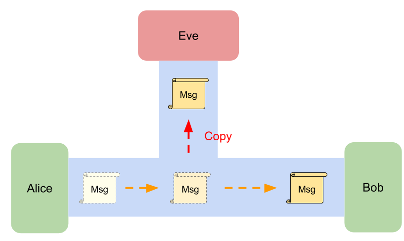 Suppose Eve is a passive attacker for the communication between Alice and Bob, then she can see all messages on the channel but she can't modify them.
There are so many potential passive attackers in the real world network, for example, The Internet provider, the government, WiFi sniffer, Someone else on the same network as you.
If your don't encrypt your messages on networks, it's easy to know what youtube you are watching, your bank accounts, your credit card numbers, or other personal information.
Active Attacker: Eve

The active attacker will talk to your system directly. If Eve is active attacker, then she will interact with Alice or Bob directly. She will try to build a protocol with Alice by pretending to be Bob to gain access or to gain greater privileges than she is authorized for. She might randomly guessing the passphrase that Alice use to authenticate Bob.
To prevent from this, we usually limit the number to attempts for authentication or building connection (e.g., You have only three attempts to login to your accounts).
To get more detail, please see types of attacks on WiKi.
Active attacker in PAKE
The active attacker in PAKE means that she is able to directly engage in key exchange.
Off-line Dictionary Attack Resistance
No matter the attacker is active or passive, the communication between parties must NOT leak any data that allows attackers to learn the private secret by performing offline-exhaustive search.
For example, hash value might leak some information about the private data. If the attacker know what hash function you used, then he can list all of the pairs to crack your private data by searching the matched hash value (Given hash value: 'ujm', then the private data 'n' can be found).
| private data | hash value |
|---|---|
| 0 | qaz |
| 1 | wsx |
| .... | ... |
| n | ujm |
| ..... | ....... |
On-line Dictionary Attack Resistance
If the attacker directly start sending a key exchange request, there is no way to prevent that the attacker tries a guess of the private secrets. However, the attacker should have only one try per communication, and the successive failed attempts should be easily detected and then blocked.
Forward Secrecy
After running PAKE protocol, the engaging parties will have a shared secret key. However, no one can guarantee that this shared secret won't be disclosed. The past session keys must be protected when the the shared secret is later leaked.
Known-session Security
If an attacker can compromise a session, then all the session-specific secrets may be leaked. Nevertheless, the impact should be minimized. The security of other established sessions must NOT be affected by the compromised session.
General Two-Stage Framework
PAKE has a general two-stage framework:
- Key Establishment Protocol
- Key Confirmation Protocol
Key Establishment Protocol
In first stage, the engaging parties will negotiate to produce a session key for their communication. One most common method is Diffie-Hellman Key Exchange, like the first stage of DH-EKE and SPEKE.
Key Confirmation Protocol
In second stage, the engaging parties will authenticate each other.
Challenge–Response Authentication
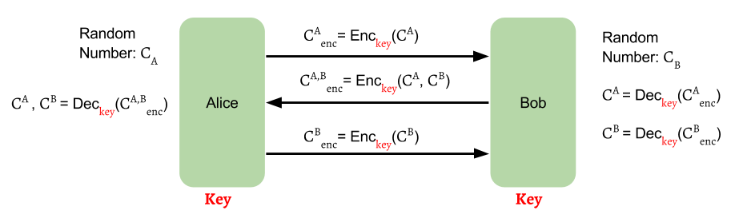
Hash-Key Authentication

Balanced PAKE
Balanced PAKE satisfy all the security requirements and allow parties to negotiate with each other to get a same shared key for encryption by some magic mathematical computation based on their common knowledge of a same password. It prevents messages from being eavesdropped and tampered, so we can keep the secrecy and integrity of the transmitted data.
We will next introduce two of most well-known protocol of Balanced PAKE, EKE and SPEKE.
EKE: Encrypted Key Exchange
Encrypted Key Exchange, often abbreviated to EKE, is invented by Steven M. Bellovin and Michael Merritt in 1992, when they worked in AT&T Bell Laboratories.
In general forms of Encrypted Key Exchange, at least one engaging parties will use the common password with a random number to generate a ephemeral (one-time) public key, and sends it to another party, who can use this received ephemeral public key to generate another public key to send to the next party or send it back to the first one. After one or more rounds of the exchange of the one-time public keys, the engaging parties can use them with the common password to generate a shared key for encryption.
SPEKE: Simple Password Exponential Key Exchange
Simple Password Exponential Key Exchange, often abbreviated to SPEKE is proposed by David P. Jablon in 1996. The protocol is almost same as Diffie-Hellman Key Exchange, except the group generate is derived from the password.
References
- CryptoWiki: Encrypted Key Exchange
- Wiki: Encrypted key exchange
- Authenticated Key Exchange with SPEKE or DH-EKE
- Encrypted Key Exchange: Password-based Protocols Secure Against Dictionary Attacks
- Strong Password-Only Authenticated Key Exchange
Diffie-Hellman Encrypted Key Exchange
Diffie-Hellman Encrypted Key Exchange is often abbreviated to DH-EKE. It's one of the original EKE protocols based on Diffie-Hellman Key Exchange.
How It Work
Suppose we have two parties, Alice and Bob, want to build a secure communication via an established insecure channel. Eve is a attackers who is enable to eavesdrop all the messages on the channel.
Assume that Alice and Bob possess the same password \( pwd \), which is not leaked out and only they both know it. Therefore, this password can be used as a key for authentication. If we use this key to encrypt the data, only the one who knows the key can decrypt it. Some attackers without key are unable to pretend themselves as Alice or Bob. Nevertheless, the password is usually a human-memorable weak password. It will be easily cracked by performing an exhaustive search if its bits is too short. To make sure the shared key \( s \) is long enough, we use the hash value of the password as the key instead. Thus, the shared secret key $$ s = hash(pwd) $$
Basic Concept
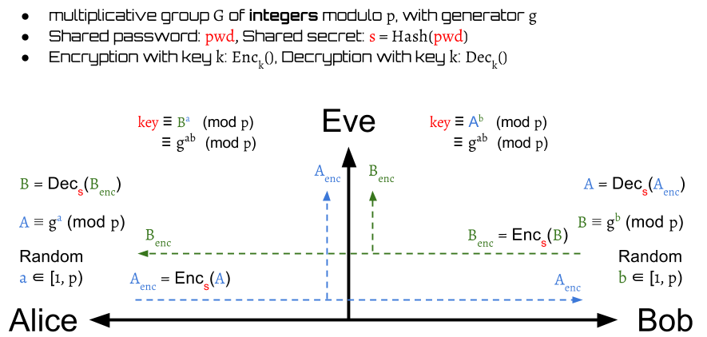
The basic idea is to use the shared secret key \( s \) to protect the public key swap of Diffie-Hellman Key Exchange. Only the one who possess the key \( s \) can encrypt and decrypt the public keys. They still can derive a symmetric session key \( k \) on both sides for conversation.
With Challenge–Response Authentication
In fact, the DH-EKE is integrated by Diffie-Hellman and challenge–response authentication. The challenge is presented by one party, and another party must reply a correct answer to be authenticated.

The first step of DH-EKE is very similar to DH. Alice picks a random number \( a \in [1, p-1] \) as her private key and use it to generate a public key: $$ A \equiv g^a \pmod p $$
Then she sends the encrypted value of the public key: $$ A_{enc} = Enc_s(A) $$ to Bob. After receiving \( A_{enc} \), Bob gets Alice's public key \( A\) by decrypting \( A_{enc} \): $$ A = Dec_s(A_{enc}) $$
Then Bob picks a random number \( b \in [1, p-1] \) as his private key to compute a session key: $$ k \equiv A^b \equiv g^{ab} \pmod p $$ for encryption in this communication.

Next, Bob generates his public key \( B \equiv g^b \pmod p \) and a random challenge \( challenge_{Bob} \). The \( challenge_{Bob} \) is then encrypted by the session key \( k \) into a value \( C_{Bob} \): $$ C_{Bob} = Enc_k(challenge_{Bob}) $$
Then, Bob encrypts his public key \( B \) with \( C_{Bob} \) into \( B_{enc} \) by \( s \) and sends it to Alice. $$ B_{enc} = Enc_s(B, C_{Bob}) $$
Alice decrypts the received \( B_{enc} \) to get Bob's public key \( B \) and \( C_{Bob} \). $$ B, C_{Bob} = Dec_s(B_{enc}) $$
Then, Alice can compute a same session key \( k \) as Bob by her own private key, $$ k \equiv B^a \equiv g^{ab} \pmod p $$

After Alice has \( k \), she can use it to decrypt \( C_{Bob} \) to get \( challenge^{Alice}_{Bob} \). The \( challenge^{Alice}_{Bob} \) here represents that Alice's decoded value of Bob's challenge:
$$ challenge^{Alice}_{Bob} = Dec_k(C_{Bob}) $$
Next, Alice randomly generates her own challenge \( challenge_{Alice} \) and then use it to encrypt with Bob's challenge \( challenge_{Bob} \) into a value \( C_{mix} \) by the session key \( k \)
$$ C_{mix} = Enc_k(challenge_{Alice}, challenge^{Alice}_{Bob}) $$
Then, Alice sends \( C_{mix} \) to Bob.
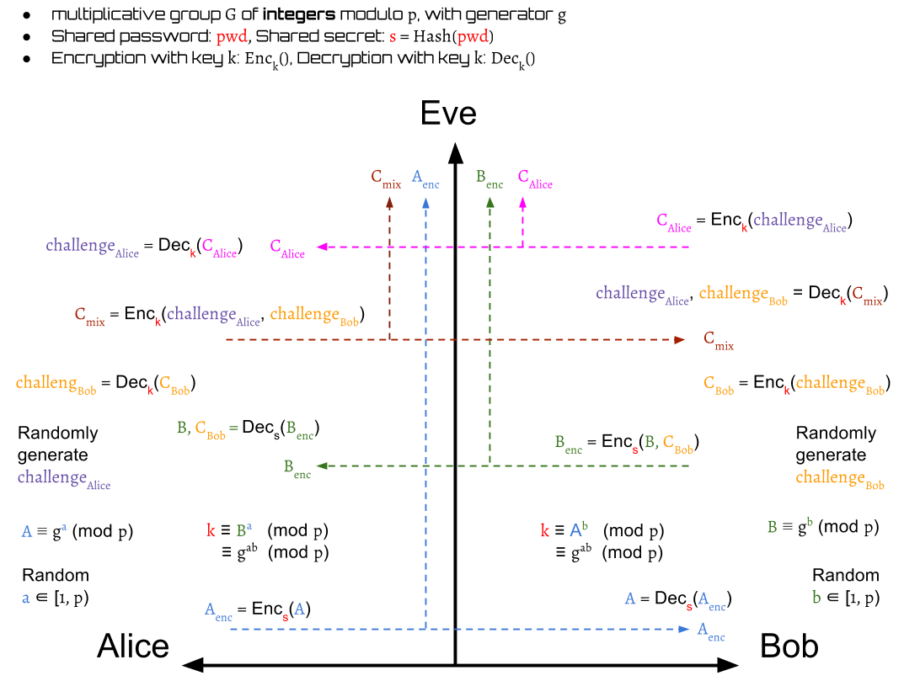
Later, Bob decrypts the \( C_{mix} \) to output \( challenge^{Bob}_{Alice} \) and \( challenge^{Alice}_{Bob} \). The \( challenge^{Bob}_{Alice} \) here represents that Bob's decoded value of Alice's challenge. $$ challenge^{Bob}_{Alice}, challenge^{Alice}_{Bob} = Dec_k(C_{mix}) $$
In this step, Bob can authenticate Alice is valid or not by checking her decoded value of his own challenge, \( challenge^{Alice}_{Bob} \):
$$ valid(Alice) = \begin{cases} true, & \text{if } challenge^{Alice}_{Bob} = challenge_{Bob} \\ false, & \text{otherwise} \end{cases} $$
If Alice is invalid, then Bob drops the session. Otherwise, Bob continue the protocols.
Next, Bob needs to prove his identification to Alice. He encrypts \( challenge^{Bob}_{Alice} \) into \( C_{Alice} \): $$ C_{Alice} = Enc_k(challenge^{Bob}_{Alice}) $$ and send it to Alice.
After receiving \( C_{Alice} \), Alice decrypts it to get Bob's decode value of her own challenge: $$ challenge^{Bob}_{Alice} = Dec_k(C_{Alice}) $$
Alice now is also able to authenticate Bob:
$$ valid(Bob) = \begin{cases} true, & \text{if } challenge^{Bob}_{Alice} = challenge_{Alice} \\ false, & \text{otherwise} \end{cases} $$
Similarly, if Bob is invalid, then Alice drops the session. Otherwise, the protocol finishes.
Finally, Alice and Bob authenticate mutually and they both have a same session key \( k \) that can be used for encryption or decryption.
Summary
- Alice generates a private-public key pair and sends the encrypted public key to Bob
- Alice picks a random number \( a \in [1, p-1] \) as her private key
- Alice generates a public key \( A \equiv g^a \pmod p \)
- Alice encrypts her public key by shared secret key \( s \)
- Alice sends \( A_{enc} = Enc_s(A) \) to Bob.
- Bob generates a private-public key pair and random challenge, computes the symmetric session key by his private key, and then sends the encrypted public key with the challenge to Alice
- Bob decrypts \( A_{enc} \) to get Alice's public key \( A \) by shared secret key \( s \)
- Bob picks a random number \( b \in [1, p-1] \) as his private key
- Bob computes a session key \( k \equiv A^b \equiv g^{ab} \pmod p \)
- Bob generates a public key \( B \equiv g^b \pmod p \)
- Bob randomly generates a \( challenge_{Bob} \)
- Bob encrypts \( challenge_{Bob} \) to \( C_{Bob} \) by \( k \)
- Bob sends \( B_{enc} = Enc_s(B, C_{Bob}) \) to Alice.
- Alice get Bob's public key and challenge, computes the symmetric session key by her private key, then generates her random challenge and send Bob's challenge back with her own one for authentication
- Alice decrypts the received \( B_{enc} \) to get \( B, C_{Bob} \) by shared secret key \( s \)
- Alice computes a session key \( k \equiv B^a \equiv g^{ab} \pmod p \)
- Alice decrypts \( C_{Bob} \) to get Bob's challenge \( challenge_{Bob} \) by \( k \)
- Alice randomly generates a \( challenge_{Alice} \)
- Alice encrypts \( challenge_{Alice}, challenge_{Bob} \) to \( C_{mix} \) by \( k \)
- Alice sends \( C_{mix} = Enc_k(challenge_{Alice}, challenge_{Bob}) \) to Bob
- Bob authenticates Alice by checking his own challenge with the received one
- Bob decrypts the received \( C_{mix} \) to get \( challenge_{Alice}, challenge_{Bob} \) by \( k \)
- Bob checks whether or not the received \( challenge_{Bob} \) is same as his original one
- Alice is authenticated if the answer is yes. Otherwise, drops session.
- Bob encrypts the received \( challenge_{Alice} \) to \( C_{Alice} \) by \( k \)
- Bob sends \( C_{Alice} = Enc_k(challenge_{Alice}) \)
- Alice authenticates Bob by checking his own challenge with the received one
- Alice decrypts the received \( C_{Alice} \) to get \( challenge_{Alice} \) by \( k \)
- Alice checks whether or not received \( challenge_{Alice} \) is same as her original one
- Bob is authenticated if the answer is yes. Otherwise, drops session.
Security Issues
Short Exponents
The packets are transmitted byte-by-byte, so its size of bits must be 8's multiple(1 byte = 8-bits). Thus, if the modulo \( p \) is \( n \) bits, then the group must \( n \) bits. The private key, the public key are all \( n \) bits.
Therefore, if \( n \neq 8 \cdot k \), where \( k \in N \), then some of bits are predictable. They must be \( 0 \). For example, if \( p = 263 = 107_{16} = 0000000100000111_{2} \), then we know the range of the group is \( [1, 262] \) and the data is 2-bytes. The first \( 7 \) bits in the first byte are all \( 0 \) because the elements in the group are smaller than \( 0000000100000111_{2} \).
References
Simple Password Exponential Key Exchange
Simple Password Exponential Key Exchange(SPEKE) is based on Diffie-Hellman Key Exchange(DH), which is a balanced PAKE protocol. The difference of SPEKE against DH is that its group generator is derived from the password rather than a public assumption. Only who knows the password can produce this private generator.
How it work
The SPEKE has two stages:
- Session key establishment by DH
- Authentication
Although there are some variations of SPEKE, their stage 1 is basically same. It uses the DH protocol to build a session key.
The stage 2 is to authenticate the conversation subject. We will introduce two ways to authenticate in this content.
Stage 1: Session Key Establishment

The stage 1 of SPEKE is shown above. Instead of using a public group generator directly, SPEKE has a function \( f \) that can produce generators by inputs. Thus, we use the shared password \( pwd \) to create a generator $$ g = f(pwd) $$ and use it to complete the DH protocol.
The modulo \( p \) used here is a safe prime \begin{aligned} p = 2q + 1 \text{, where $q$ is also a prime} \end{aligned}
After this stage finishes, the Alice and Bob can get a symmetric session key \( k \) to encrypt/decrypt the transmitted messages.
Stage 2 with Challenge–Response Authentication
Challenge–Response Authentication is one way to verify whether or not the other party is Bob. The detail can be seen in the following terms.
 Alice generates a random challenge \( challenge_{Alice} \)
and then encrypt it to \( C_{Alice} \) by the session key \( k \):
$$
C_{Alice} = Enc_k(challenge_{Alice})
$$
Alice generates a random challenge \( challenge_{Alice} \)
and then encrypt it to \( C_{Alice} \) by the session key \( k \):
$$
C_{Alice} = Enc_k(challenge_{Alice})
$$
Bob then can decrypt \( C_{Alice} \) to \( challenge^{Bob}_{Alice} \) by the session key \( k \): $$ challenge^{Bob}_{Alice} = Dec_k(C_{Alice}) $$
 Then, Bob also generates a random challenge \( challenge_{Bob} \).
It is encrypted with \( challenge^{Bob}_{Alice} \)
into \( C_{mix} \) by \( k \) and then send back to Alice:
$$
C_{mix} = Enc_k(challenge^{Bob}_{Alice}, challenge_{Bob})
$$
Then, Bob also generates a random challenge \( challenge_{Bob} \).
It is encrypted with \( challenge^{Bob}_{Alice} \)
into \( C_{mix} \) by \( k \) and then send back to Alice:
$$
C_{mix} = Enc_k(challenge^{Bob}_{Alice}, challenge_{Bob})
$$
After Alice receives \( C_{mix} \), she can decrypt it to get $$ challenge^{Bob}_{Alice}, challenge^{Alice}_{Bob} = Dec_k(C_{mix}) $$
Alice now is able to verify whether or not Bob is valid by comparing the received Bob's decrypted value of her challenge and her original one. $$ valid(Bob) = \begin{cases} true, & \text{if } challenge^{Bob}_{Alice} = challenge_{Alice} \\ false, & \text{otherwise} \end{cases} $$
If Bob is invalid, then Alice immediately drops the session. Otherwise, the protocol should continue.

Beside the \( challenge^{Bob}_{Alice} \), Alice also get a decrypted value of Bob's challenge \( challenge^{Alice}_{Bob} \). This is used as a proof that Alice has the same key \( k \) as Bob. Alice sends \( C_{Bob} \) to Bob for authentication: $$ C_{Bob} = Enc_k(challenge^{Alice}_{Bob}) $$
When Bob receives the \( C_{Bob} \), he can decrypt it: $$ challenge^{Alice}_{Bob} = Dec_k(C_{Bob}) $$ to compare Alice's decrypted value of his own challenge with his original one.
$$ valid(Alice) = \begin{cases} true, & \text{if } challenge^{Alice}_{Bob} = challenge_{Bob} \\ false, & \text{otherwise} \end{cases} $$ If they are different, the Bob immediately drops the session. Otherwise, Alice is authenticated and the protocol finishes.
Stage 2 with Hash-Key Authentication
Instead of random challenge, another simpler method to authenticate the other party is to use hash function. The steps consists of the following:
 First, Alice send twice hashed value of the session key to Bob:
$$
C_{Alice} = h(h(k))
$$
First, Alice send twice hashed value of the session key to Bob:
$$
C_{Alice} = h(h(k))
$$
Then Bob can authenticate Alice by $$ valid(Alice) = \begin{cases} true, & \text{if } C_{Alice} = h(h(k)) \\ false, & \text{otherwise} \end{cases} $$
If Alice is a invalid party, then the session is dropped. Otherwise, the protocol continues.
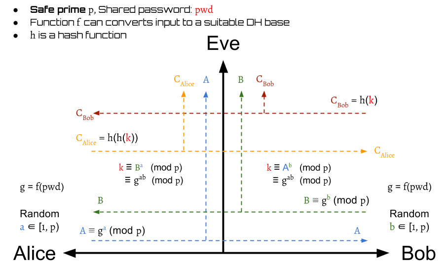
After verifying Alice, Bob also need to prove his identification to Alice. Bob sends $$ C_{Bob} = h(k) $$ to Alice. Alice then can certify Bob by $$ valid(Bob) = \begin{cases} true, & \text{if }h(C_{Bob}) = C_{Alice} \\ false, & \text{otherwise} \end{cases} $$
Finally, they can authenticate mutually.
Summary
Security Issues
Short Exponents
Similar to the case of DH-EKE, partial bits may be predictable.
Test multiple passwords in one time
f(x) = x2 mod p
 The basic idea to get the generator is to define \( f(x) = x^2 \bmod p \),
, where \( p \) is a safe prime such that \( p = 2q + 1 \), \( q \) is also a prime.
Then, the generator \( g \) will be computed by \( pwd^2 \bmod p \).
This makes sure that every \( f(x) \) will be a generator of
a cyclic subgroup of \( G \), where \( G = { x \vert 0 < x < p \cap x \in N } \)
(We need a proof here!)
The basic idea to get the generator is to define \( f(x) = x^2 \bmod p \),
, where \( p \) is a safe prime such that \( p = 2q + 1 \), \( q \) is also a prime.
Then, the generator \( g \) will be computed by \( pwd^2 \bmod p \).
This makes sure that every \( f(x) \) will be a generator of
a cyclic subgroup of \( G \), where \( G = { x \vert 0 < x < p \cap x \in N } \)
(We need a proof here!)
If we take \( q = 11 \) to get a safe prime \( p = 23 \), then the generators are:
| x | f(x) |
|---|---|
| 1 | 1 |
| 2 | 4 |
| 3 | 9 |
| 4 | 16 |
| 5 | 2 |
| 6 | 13 |
| 7 | 3 |
| 8 | 18 |
| 9 | 12 |
| 10 | 8 |
| 11 | 6 |
| 12 | 6 |
| 13 | 8 |
| 14 | 12 |
| 15 | 18 |
| 16 | 3 |
| 17 | 13 |
| 18 | 2 |
| 19 | 16 |
| 20 | 9 |
| 21 | 4 |
| 22 | 1 |
| 23 | 0 |
| 24 | 1 |
| 25 | 4 |
| .. | .. |
From the table above, one obvious fact is that the attacker is allowed to test two \( pwd \) by guessing one \( g = f(pwd) \). For example, the attacker can guess the \( g = 16 = f(pwd) \). If he doesn't hit, then he knows that \( pwd \) is not 4 and 19. In the worst case that the \( pwd \) is fixed, the attacker can use half time to force brute the \( pwd \).
The collision is guaranteed because \begin{aligned} (q + k + 1)^2 \equiv (q - k)^2 \pmod p \\ \text{ ,where $k \in Z, p = 2q + 1$.} \end{aligned}
Proof: $$ \begin{aligned} (q + k + 1)^2 &\equiv (q + (k + 1))^2 \\ & \equiv q^2 + 2q(k+1) + (k+1)^2 \pmod {2q + 1} \\ &\equiv q^2 + 2kq + 2q + k^2 + 2k + 1 \pmod {2q + 1} \\ &\equiv q^2 - 2kq + k^2 + 4kq + 2k + 2q + 1 \pmod {2q + 1} \\ &\equiv (q - k)^2 + 2k(2q + 1) + (2q + 1) \pmod {2q + 1} \\ &\equiv (q - k)^2 + (2k + 1)(2q + 1) \pmod {2q + 1} \\ &\equiv (q - k)^2 \pmod {2q + 1} \end{aligned} $$
When \( k = 0 \), then \( (12)^2 \equiv (11)^2 \pmod {23} \). When \( k = 1 \), then \( (13)^2 \equiv (10)^2 \pmod {23} \). ...
f(x) = (hash(x))2 mod p
Suppose we have a hash table
| x | hash(x) | f(x) |
|---|---|---|
| 1 | 17 | 13 |
| 2 | 9 | 12 |
| 3 | 20 | 9 |
| 4 | 1 | 1 |
| 5 | 15 | 18 |
| 6 | 10 | 8 |
| 7 | 2 | 4 |
| 8 | 5 | 2 |
| 9 | 22 | 1 |
| 10 | 23 | 0 |
| 11 | 7 | 3 |
| 12 | 19 | 16 |
| 13 | 4 | 16 |
| 14 | 6 | 13 |
| 15 | 3 | 9 |
| 16 | 11 | 6 |
| 17 | 8 | 18 |
| 18 | 14 | 12 |
| 19 | 21 | 4 |
| 20 | 12 | 6 |
| 21 | 18 | 2 |
| 22 | 13 | 8 |
| 23 | 16 | 3 |
Even we use the hash the map the \( pwd \) before squaring it, the fact that the attacker is allowed to test two \( pwd \) by guessing one \( g = f(pwd) \) won't be changed. For example, the attacker guesses \( g = 16 = f(pwd) \). If he doesn't hit, then he knows that \( pwd \) is not 12 and 13.
Impersonation Attack
The author of J-PAKE points out a two attacks against SPEKE. The first attack allows an attacker to successfully build two sessions with a same victim without knowing the password. 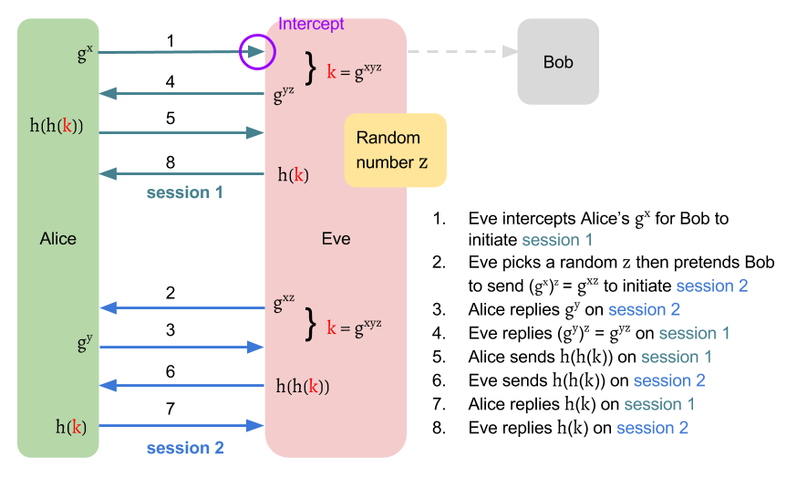
Although the attacker may not get the session key \( k \), it's still dangerous. Assume that Alice is a server of a bank. Suppose Alice sends a encrypted message "Pay Jimmy one million" to Bob on session 1. Eve can simply reply this message to Alice on session 2. Since Eve is a valid user who is authenticated as Bob, Alice may follow the received instruction and pay Jimmy one million.
Key-malleability Attack
The author of J-PAKE points out a two attacks against SPEKE.
The second attack allows an attacker to have a hand in the session key
between two parties without being detected.

Program to verify the generator
We can write a python program like speke.py to verify the generator \( g = f(pwd) \) is a generator of a subgroup of \( G \).
If \( p = 23, f(x) = x^2 \bmod p \), then the output will be as follows:
| password | generator | subgroup | sorted subgroup |
|---|---|---|---|
| 1 | 1 | 1 | 1 |
| 2 | 4 | 4, 16, 18, 3, 12, 2, 8, 9, 13, 6, 1 | 1, 2, 3, 4, 6, 8, 9, 12, 13, 16, 18 |
| 3 | 9 | 9, 12, 16, 6, 8, 3, 4, 13, 2, 18, 1 | 1, 2, 3, 4, 6, 8, 9, 12, 13, 16, 18 |
| 4 | 16 | 16, 3, 2, 9, 6, 4, 18, 12, 8, 13, 1 | 1, 2, 3, 4, 6, 8, 9, 12, 13, 16, 18 |
| 5 | 2 | 2, 4, 8, 16, 9, 18, 13, 3, 6, 12, 1 | 1, 2, 3, 4, 6, 8, 9, 12, 13, 16, 18 |
| 6 | 13 | 13, 8, 12, 18, 4, 6, 9, 2, 3, 16, 1 | 1, 2, 3, 4, 6, 8, 9, 12, 13, 16, 18 |
| 7 | 3 | 3, 9, 4, 12, 13, 16, 2, 6, 18, 8, 1 | 1, 2, 3, 4, 6, 8, 9, 12, 13, 16, 18 |
| 8 | 18 | 18, 2, 13, 4, 3, 8, 6, 16, 12, 9, 1 | 1, 2, 3, 4, 6, 8, 9, 12, 13, 16, 18 |
| 9 | 12 | 12, 6, 3, 13, 18, 9, 16, 8, 4, 2, 1 | 1, 2, 3, 4, 6, 8, 9, 12, 13, 16, 18 |
| 10 | 8 | 8, 18, 6, 2, 16, 13, 12, 4, 9, 3, 1 | 1, 2, 3, 4, 6, 8, 9, 12, 13, 16, 18 |
| 11 | 6 | 6, 13, 9, 8, 2, 12, 3, 18, 16, 4, 1 | 1, 2, 3, 4, 6, 8, 9, 12, 13, 16, 18 |
| 12 | 6 | 6, 13, 9, 8, 2, 12, 3, 18, 16, 4, 1 | 1, 2, 3, 4, 6, 8, 9, 12, 13, 16, 18 |
| 13 | 8 | 8, 18, 6, 2, 16, 13, 12, 4, 9, 3, 1 | 1, 2, 3, 4, 6, 8, 9, 12, 13, 16, 18 |
| 14 | 12 | 12, 6, 3, 13, 18, 9, 16, 8, 4, 2, 1 | 1, 2, 3, 4, 6, 8, 9, 12, 13, 16, 18 |
| 15 | 18 | 18, 2, 13, 4, 3, 8, 6, 16, 12, 9, 1 | 1, 2, 3, 4, 6, 8, 9, 12, 13, 16, 18 |
| 16 | 3 | 3, 9, 4, 12, 13, 16, 2, 6, 18, 8, 1 | 1, 2, 3, 4, 6, 8, 9, 12, 13, 16, 18 |
| 17 | 13 | 13, 8, 12, 18, 4, 6, 9, 2, 3, 16, 1 | 1, 2, 3, 4, 6, 8, 9, 12, 13, 16, 18 |
| 18 | 2 | 2, 4, 8, 16, 9, 18, 13, 3, 6, 12, 1 | 1, 2, 3, 4, 6, 8, 9, 12, 13, 16, 18 |
| 19 | 16 | 16, 3, 2, 9, 6, 4, 18, 12, 8, 13, 1 | 1, 2, 3, 4, 6, 8, 9, 12, 13, 16, 18 |
| 20 | 9 | 9, 12, 16, 6, 8, 3, 4, 13, 2, 18, 1 | 1, 2, 3, 4, 6, 8, 9, 12, 13, 16, 18 |
| 21 | 4 | 4, 16, 18, 3, 12, 2, 8, 9, 13, 6, 1 | 1, 2, 3, 4, 6, 8, 9, 12, 13, 16, 18 |
| 22 | 1 | 1 | 1 |
References
- Strong Password-Only Authenticated Key Exchange
- Simple password exponential key exchange
- Wiki: SPEKE (cryptography)
Augmented PAKE
References
Secure Remote Password protocol
J-PAKE: Password Authenticated Key Exchange by Juggling Without PKI
Password Authenticated Key Exchange by Juggling(J-PAKE) is a password-authenticated key agreement(PAKE) protocol without requiring Public Key Infrastructure(PKI) for authentication. J-PAKE is able to establish a private and authenticated channel on top of an insecure network solely based on a shared password.
Why we need J-PAKE
- EKE may leak partial information about password to a passive attacker
- SPEKE allows an active attacker to test multiple password in one protocol execution
- They are both patented
Applications
- Firefox Sync (removed after 2015)
- OpenSSH and OpenSSL (removed after 2014)
- Thread (IoT wireless network protocol)
- Palemoon sync (forked from Firefox)
Zero-Knowledge Proof
J-PAKE use Zero-Knowledge Proof to produce valid knowledge proof of a discrete logarithm without revealing it. One example is to use Schnorr digital signature, which is a non-interactive protocol.
What is the group used in J-PAKE?
References
J-PAKE Protocol
As a PAKE family member, J-PAKE follows the general two-stage framework:
- Key Establishment Protocol: Negotiate a one-time session key for the engaging parties.
- Key Confirmation Protocol: Authenticate each other has the same session key.
The key confirmation part is easy to understand. It's nothing different from the introduction of two-stage framework. In this chapter, we will focus on the first stage to realize the magic behind J-PAKE.
Before introducing, let we define the symbols first: Let group \( G \) is a subgroup of \( Z^{\times}_p \) with prime order \( q \), in which the discrete log problem is intractable (Nevertheless, \( G \) also can be switched to Elliptic curve cryptography group). Let \( g \) is the generator of \( G \). Typically, Schnorr group is used in this protocol.
The two communication parties, Alice and Bob, both agree on group \( (G, g) \). Let \( s \) is their low-entropy shared secret, which can be a password or hash of a password, and \( s \neq 0 \) is not empty. The value of \( s \) is assumed in \( [1, q-1] \).
Key Establishment
The key establishment of J-PAKE executes in two rounds.
Round 1
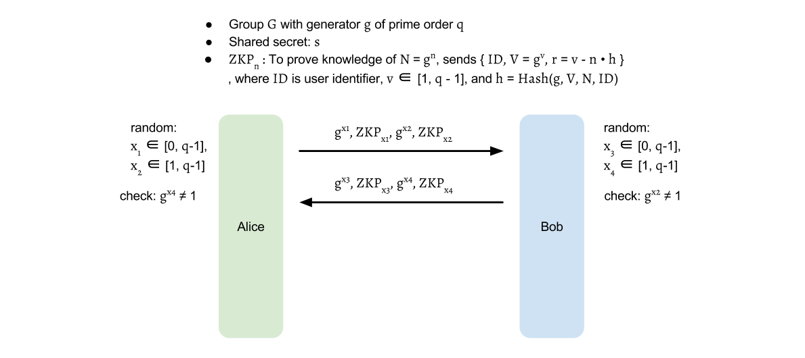
In round 1, Alice selects \( x_1 \in [0, q-1], x_2 \in [1, q-1] \) then sends out \( g^{x_1}, g^{x_2} \) with Zero-knowledge proof for \( x_1, x_2 \). Similarly, Bob selects \( x_3 \in [0, q-1], x_4 \in [1, q-1] \) and sends out \( g^{x_3}, g^{x_4} \) with Zero-knowledge proof for \( x_3, x_4 \). The above communication can be completed in one round as neither party depends on the other. When it finishes, Alice and Bob verify the received Zero-knowledge proof and also check \( g^{x_2}, g^{x_4} \neq 1 \).
Round 2

Alice sends out \( A = g^{(x_1 + x_3 + x_4) \cdot x_2 \cdot s} = (g^{x_1} \cdot g^{x_3} \cdot g^{x_4})^{x_2 \cdot s} \) and a Zero-knowledge proof for \( x_2 \cdot s \). Similarly, Bob sends out \( B = g^{(x_1 + x_2 + x_3) \cdot x_4 \cdot s} = (g^{x_1} \cdot g^{x_2} \cdot g^{x_3})^{x_4 \cdot s} \) and a Zero-knowledge proof for \( x_4 \cdot s \).
After round 2, Alice computes \( K = (B / g^{x_2 \cdot x_4 \cdot s})^{x_2} = g^{(x_1 + x_3) \cdot x_2 \cdot x_4 \cdot s} \), and Bob computes \( K = (A / g^{x_2 \cdot x_4 \cdot s})^{x_4} = g^{(x_1 + x_3) \cdot x_2 \cdot x_4 \cdot s} \).
With the same keying material \( K \), a session key can be derived for Alice and Bob: \( k = H(K) \), where \( H \) is a Cryptographic hash function.
The division \( / \) here means multiplication with the inverse element. For example, \( a / b = a \cdot b^{-1} = b^{q - 1} \), where \( a, b \in G \). \( b^{-1} \) is an element such that \( b \cdot b^{-1} = 1 \), known as the inverse element of \( b \). From the fact that \( b^q = 1 \), where \( q \) is the order of \( G \), \( b^{q-i} \) can be used as an inverse element of \( b^i \) because \( b^i \cdot b^{q-i} = b^q = 1 \), where \( i \in N \).
Therefore, the \( K \) can be computed by
$$ \begin{aligned} K &= (\frac{B}{g^{x_2 \cdot x_4 \cdot s}})^{x_2} \\ &= (B \cdot g^{-(x_2 \cdot x_4 \cdot s}))^{x_2} \\ &= (B \cdot (g^{x_2 \cdot x_4})^{-s})^{x_2} \\ &= (B \cdot (g^{x_2 \cdot x_4})^{q-s})^{x_2} \\ \\ L &= g^{x_2 \cdot x_4} = (g^{x_4})^{x_2} \\ I &= L^{-s} = L^{q-s} \\ J_{Alice} &= B \cdot I \\ K &= (J_{Alice})^{x_2} \end{aligned} $$
$$ \text{ , where } q \text{ is the order of } G $$
or
$$ \begin{aligned} K &= (\frac{A}{g^{x_2 \cdot x_4 \cdot s}})^{x_4} \\ &= (A \cdot g^{-(x_2 \cdot x_4 \cdot s)})^{x_4} \\ &= (A \cdot (g^{x_2 \cdot x_4})^{-s})^{x_4} \\ &= (A \cdot (g^{x_2 \cdot x_4})^{q-s})^{x_4} \\ \\ L &= g^{x_2 \cdot x_4} = (g^{x_2})^{x_4} \\ I &= L^{-s} = L^{q-s} \\ J_{Bob} &= A \cdot I \\ K &= (J_{Bob})^{x_4} \end{aligned} $$
$$ \text{ , where } q \text{ is the order of } G $$
Key Confirmation
There are several ways to achieve explicit key confirmation. One simple method is to use hash-key like SPEKE to do it: Alice sends Bob \( H(H(k)) \), and then Bob replies with \( H(k) \).
Another method is use the session key \( k \) to encrypt and decrypt a random value(random challenge) like EKE.
Zero-Knowledge Proof
 In the protocol, we need to produce a valid knowledge proof for the exponent.
As an example, we can use Schnorr signature mentioned in appendix to do it.
To prove the knowledge of the exponent for \( X = g^x \),
one sends out \( X \) with Zero-Knowledge proof: \( {ID, V = g^v, r = v - x \cdot h} \),
where $ID$ is the unique user identifier,
\( v \in Z_q \) and \( h = H(g, V, X, ID) \), \( H \) is a secure hash function.
The receiver then can compute their own \( h' = H(g, V, X, ID) \)
and verifies \( V = g^r \cdot X^{h'} \).
The \( ID \) added here is to prevent Alice replaying Bob's signature back to Bob
and vise versa.
In the protocol, we need to produce a valid knowledge proof for the exponent.
As an example, we can use Schnorr signature mentioned in appendix to do it.
To prove the knowledge of the exponent for \( X = g^x \),
one sends out \( X \) with Zero-Knowledge proof: \( {ID, V = g^v, r = v - x \cdot h} \),
where $ID$ is the unique user identifier,
\( v \in Z_q \) and \( h = H(g, V, X, ID) \), \( H \) is a secure hash function.
The receiver then can compute their own \( h' = H(g, V, X, ID) \)
and verifies \( V = g^r \cdot X^{h'} \).
The \( ID \) added here is to prevent Alice replaying Bob's signature back to Bob
and vise versa.
Why does J-PAKE need Zero-Knowledge Proof
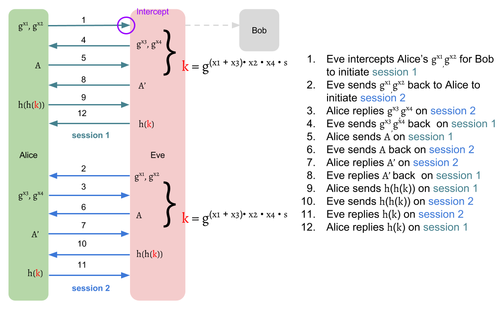 If we don't use ZKP here, J-PAKE will suffer impersonation-attack like SPEKE
Can we use hash instead of ZKP
No. To use hash to verify, the two party must have the same secret. If only one party has the secret, then the other has no way to verify it. It doesn't has the value to hash, so it has no results to compare.
Why x2, x4 and s can NOT be 0?
$$ K = g^{(x_1 + x_3) \cdot x_2 \cdot x_4 \cdot s} $$
The attackers can intentionally choose \( x_2 = 0 \) or \( x_4 = 0 \) to force the \( K = 1 \), even he doesn't know the password. Therefore, the range of \( x_2, x_4 \) are specified in 1 to \( q-1 \). This is also the same reason for \( s \neq 0 \).
Why don't we just select x1, x2, x3, x4 between 1 to q-1?
The \( K \) still can be 1 if \( x_1 + x_3 = 0 \). However, the probability is extremely low. You can still select \( x_1, x_2, x_3, x_4 \in [1, q-1] \). It's valid. But you will lose the combinations of \( x_1 = 0 \) paired to \( x_2, x_3, x_4 \neq 0 \) and \( x_2 = 0 \) paired to \( x_1, x_3, x_4 \neq 0 \).
Examples
Let take the group in appendix for Group Theory as an example. \( G = { 1, 2, 3, 4, 6, 8, 9, 12, 13, 16, 18 } \) is a Schnorr group with prime order \( q = 11 \) and generator \( g = 9 \), which is the subgroup of \( Z^{\times}{23} = { x \vert 0 < x < 23 \cap x \in N } \). \( Z^{\times}{23} \) is a multiplicative group of integers modulo \( p \), \( p = 23 \). And let shared secret \( s = 7(1 \leq s \leq q-1) \).
Suppose Alice first chooses \( x_1 = 9(0 \leq x_1 \leq q-1), x_2 = 3(1 \leq x_2 \leq q-1) \) and Bob chooses \( x_3 = 5(0 \leq x_3 \leq q-1), x_4 = 6(1 \leq x_4 \leq q-1) \), the final results are as follows:
| Rnd | Dir | Alice | Public | Bob |
|---|---|---|---|---|
| g = 9, q = 11, p = 23, s = 7 | g = 9, q = 11, p = 23 | g = 9, q = 11, p = 23, s = 7 | ||
| x1 = 9, x2 = 3 | x3 = 5, x4 = 6 | |||
| 1 | → | gx1 = 2, gx2 = 16 | gx1 = 2, gx2 = 16 | gx1 = 2, gx2 = 16 |
| 1 | ← | gx3 = 8, gx4 = 3 | gx3 = 8, gx4 = 3 | gx3 = 8, gx4 = 3 |
| 2 | → | A = 12 | A = 12 | A = 12 |
| 2 | ← | B = 18 | B = 18 | B = 18 |
| K = 11 | K = 11 |
\( g^{x_1}, g^{x_2}, g^{x_3}, g^{x_4} \) can be directly get from example Schnorr group in appendix. Next, we will use \( g^{x_1}, g^{x_2}, g^{x_3}, g^{x_4} \) to compute \( A, B, K \). You can try all the following computation process on Online Big Number Calculator to verify the results.
$$ \begin{aligned} A &\equiv (g^{x_1} \cdot g^{x_3} \cdot g^{x_4})^{x_2 \cdot s} \pmod p\\ &\equiv (2 \cdot 8 \cdot 3)^{3 \cdot 7} \pmod {23}\\ &\equiv (48)^{3 \cdot 7} \pmod {23}\\ &\equiv 2^{3 \cdot 7} \pmod {23}\\ &\equiv (2^3)^7 \pmod {23}\\ &\equiv 8^7 \pmod {23}\\ &\equiv 12 \end{aligned} $$
$$ \begin{aligned} B &\equiv (g^{x_1} \cdot g^{x_2} \cdot g^{x_3})^{x_4 \cdot s} \pmod p\\ &\equiv (2 \cdot 16 \cdot 8)^{6 \cdot 7} \pmod {23}\\ &\equiv (256)^{6 \cdot 7} \pmod {23}\\ &\equiv 3^{6 \cdot 7} \pmod {23}\\ &\equiv (3^6)^7 \pmod {23}\\ &\equiv 16^7 \pmod {23}\\ &\equiv 18 \end{aligned} $$
To compute \( K \) for Alice, we first start with \( (g^{x_4})^{x_2} \) to get \( g^{x_2 \cdot x_4} \). Next, we can use \( (g^{x_2 \cdot x_4})^{-s} = (g^{x_2 \cdot x_4})^{q-s} \) to get \( g^{-(x_2 \cdot x_4 \cdot s)} \). Then, \( J_{Alice} = \frac{B}{g^{x_2 \cdot x_4 \cdot s}} \) can be calculated by \( J_{Alice} = B \cdot g^{-(x_2 \cdot x_4 \cdot s)} = B \cdot (g^{x_2 \cdot x_4})^{-s} \) Finally, \( K = (J_{Alice})^{x_2} \).
$$ \begin{aligned} L &\equiv (g^{x_4})^{x_2} \pmod p\\ &\equiv 3^{3} \pmod {23}\\ &\equiv 4 \\ \\ I &\equiv L^{-s} \equiv L^{q-s} \pmod p\\ &\equiv 4^{11-7} \equiv 4^4 \pmod {23}\\ &\equiv 3 \\ \\ J_{Alice} &\equiv B \cdot I \pmod p\\ &\equiv 18 \cdot 3 \pmod {23}\\ &\equiv 8 \ \\ K &\equiv (J_{Alice})^{x_2} \pmod p\\ &\equiv 8^{3} \pmod {23}\\ &\equiv 6 \end{aligned} $$
In the same way, Bob can start with \( (g^{x_2})^{x_4} \) to get \( g^{x_2 \cdot x_4} \). Then apply \( (g^{x_2 \cdot x_4})^{-s} = (g^{x_2 \cdot x_4})^{q-s} \) to \( K = (\frac{A}{g^{x_2 \cdot x_4 \cdot s}})^{x_4} = (A \cdot (g^{x_2 \cdot x_4})^{-s}))^{x_4} \).
$$ \begin{aligned} L &\equiv (g^{x_2})^{x_4} \pmod p\\ &\equiv 16^{6} \pmod {23}\\ &\equiv 4 \\ \\ I &\equiv L^{-s} \equiv L^{q-s} \pmod p\\ &\equiv 4^{11-7} \equiv 4^4 \pmod {23}\\ &\equiv 3 \\ \\ J_{Bob} &\equiv A \cdot I \pmod p\\ &\equiv 12 \cdot 3 \pmod {23}\\ &\equiv 13 \\ \\ K &\equiv (J_{Alice})^{x_4} \pmod p\\ &\equiv 13^{6} \pmod {23}\\ &\equiv 6 \end{aligned} $$
References
- Password Authenticated Key Exchange by Juggling
- J-PAKE: Authenticated Key Exchange Without PKI
- Online Big Number Calculator
Security
Recall the security requirements for PAKE protocols:
- Off-line dictionary attack resistance: No leaked information for attackers, which allows them to perform offline-exhaustive search to find the password.
- On-line dictionary attack resistance: An active attacker is allowed to test only one password per protocol.
- Forward secrecy: The session keys are still secure even when the password is later leaked.
- Known-session security: A disclosed session key doesn't affect the security of other established session.
Off-line dictionary attack resistance
Active attacker
Suppose Bob is an attacker who directly talk to Alice but he doesn't possess the shared secret \( s \). The data available for Bob include \( g^{x_1}, g^{x_2}, A \) and Zero Knowledge Proofs (ZKP) for the respective exponents.
By protocol definition, \( x_1 \in [0, q-1], x_2 \in [1, q-1], s \in [1, q-1] \) , they are unknown for Bob when \( q \) is a very large number. If \( q \) is 160-bits, the probability to hit \( x_1 \) and \( x_2, s \) are respectively \( \frac{1}{2^{160}} \) and \( \frac{1}{2^{160} - 1} \) for Bob. Bob is impossible to guess right.
Passive attacker
The data available for an passive attacker include \( g^{x_1}, g^{x_2}, g^{x_3}, g^{x_4}, A, B \) and their Zero Knowledge Proofs(ZKP). Same as above, the probability to his all \( x_1, x_2, x_3, x_4, s \) is extremely low.
On-line dictionary attack resistance
Suppose Bob is an attacker who directly talk to Alice but he doesn't possess the shared secret \( s \). Bob can freely choose \( x_3, x_4 \) and the password \( w \). Then, the \( B = g^{(x_1 + x_2 + x_3) \cdot x_4 \cdot w} \) After receiving \( B \), Alice computes $$ \begin{aligned} K &= (\frac{B}{g^{x_2 \cdot x_4 \cdot s}})^{x_2} \\ &= g^{x_1 \cdot x_2 \cdot x_4 \cdot w} \cdot g^{x_2 \cdot x_3 \cdot x_4 \cdot w} \cdot g^{x_2 \cdot x_2 \cdot x_4 \cdot (w - s)} \end{aligned} $$
Therefore, without \( x_1, x_2, s \), Bob is unable to compute \( K \).
Forward secrecy
In this case, we consider the password is already leaked to the attacker. However, the past session key still can not be computed because the attacker at least need to get \( x_1, x_2 \) (if the attacker is active, then \( x_3, x_4 \) is hold by himself). Thus, the probability to compute a right session key is overwhelming low.
Known-session security
Assume that the attacker is powerful enough to compromise a session, and learn all data of the compromised session like raw key \( K \) and all private key \( x_1, x_2, x_3, x_4 \).
Each session key is derived from one set of random number \( x_1, x_2, x_3, x_4 \), so it's different in each session. Due to the session key is ephemeral, the attacker have no chance to compute the session key of other sessions even he have already compromised one.
Comparison
J-PAKE scheme looks too computationally expensive, but actually it's not.
| Item | Description | No of Exp |
|---|---|---|
| 1 | Compute gx1, gx2 and ZKPs for { x1, x2 } | 4 |
| 2 | Verify ZKPs for { x3, x4 } | 4 |
| 3 | Compute A and ZKP for { x2 • s } | 2 |
| 4 | Verify ZKP for { x4 • s } | 2 |
| 5 | Compute K | 2 |
| Total | 14 |
Recall that EKE and SPEKE use only 2 exponentiations compared with 14 exponentiations in J-PAKE, we might think J-PAKE is computationally expensive. However, both EKE and SPEKE must use long exponents. One typical exponentiation in EKE or SPEKE is equivalent in cost 6-7 exponentiation in J-PAKE. Hence, overall computational costs for EKE, SPEKE, and J-PAKE are actually about the same.
Why can J-PAKE use short exponents?
You must be curious about why J-PAKE can use short exponents. The basic pattern of the PAKE family are exactly same. They all choose a secret number \( x \) as a private key and generate a public key \( g^x \) with the group generator \( g \).
From the aspect of probability, the reason of why J-PAKE can achieve same security as EKE and SPEKE is that it decomposes the probability of cracking one private key into several probabilities of cracking several private keys.
Suppose the EKE or SPEKE use a 4-bits group modulo \( p \), then its used private key must also be 4-bits. Therefore, there are \( 2^4 = 16 \) possible choices for the private key. To crack one PAKE session channel, the attacker needs to hit not only Alice's private key, but also Bob's one. Thus, the probability of hitting the private keys of both sides is \( \frac{1}{16} \cdot \frac{1}{16} = \frac{1}{256} \). However, J-PAKE can reach the same probability by using only 2-bits group modulo \( p \). J-PAKE uses 2 exponents per session on each side. Consequently, it will produce 2 private keys on each side in one protocol execution. That is, Alice and Bob will have \( 2^2 = 4 \) choices for one 2-bits private key. To establish one J-PAKE session, both Alice and Bob will have \( 4 \cdot 4 = 16 \) possible combinations for two random private keys. Thus, there are \( 16 \cdot 16 = 256 \) possible combinations for Alice and Bob's private keys. Then the probability to compromise a J-PAKE session is \( \frac{1}{256} \). And that's why J-PAKE can achieve the same security as EKE and SPEKE.
Formally, assume that \( u, v \) are the probabilities to crack one private key of respectively EKE/SPEKE and J-PAKE. Then to find a \( v \) such that \( u^2 = v^4 \) can guarantee that J-PAKE has same security level as EKE and SPEKE. That is, if we use \( i \) bits private key for EKE or SPEKE, To achieve same security level, we must use \( j \) bits private key for J-PAKE such that
$$ \begin{aligned} u &= \frac{1}{2^i} \\ v &= \frac{1}{2^j} \\ u^2 &= v^4 \\ \Rightarrow (\frac{1}{2^i})^2 &= (\frac{1}{2^j})^4 \\ \Rightarrow \frac{1}{2^{2i}} &= \frac{1}{2^{4j}} \\ \Rightarrow 2^{2i} &= 2^{4j} \\ \Rightarrow j &= \frac{i}{2} \end{aligned} $$
Thus, J-PAKE can only use half bits of EKE or SPEKE to keep the channel secret.
J-PAKE over TLS
In the case that there is no trusted third party like PKI in the network, the certificate of server/client can not be authenticated. That is, the communication parties can not verified each others, while they can still establish a confidential channel without authentication.
However, if there is a shared password between the communication parties, then we can use PAKE to authenticate each side. One approach is Secure modular password authentication for the web using channel bindings published on SSR 2014(We will use SSR2014 as this work later).
Here, we want to introduced a variant if SSR2014, named J-PAKE over TLS. The basic concept is same as SSR2014, but we add a little change.
Basic idea
Establish the confidential TLS channel without authentication first, and then authenticate both side by J-PAKE.
Man-in-the-middle
However, it can not prevent the man-in-the-middle(MITM) attack.
Mixing TLS fingerprint in the shared secret
To avoid MITM, we can mix the TLS's fingerprint in
References
Discussion
Why we need to use TLS here? Why don't we just use J-PAKE with AES or DES over TCP?
Imagine that we are no TLS here. You need to establish a network protocol to transfer data. you might use TCP or UDP. After building channel, you need to perform J-PAKE protocol and then encrypt/decrypt messages with the symmetric key computed from J-PAKE. Before encrypting, you need check the two parties have at least one same cryptographic encryption module like AES or DES by your own. In summary, you need to build TCP or UDP channel, and then negotiate a encryption module for further usage.
This sounds like the handshake step of TLS.
Why don't you use the built-in TLS if you already have one?
That is, TLS = (AES/DES/..) + TCP, so, J-PAKE + (AES/DES/..) + TCP = J-PAKE + TLS
Thus, we can use the built-in TLS to establish a TCP channel and reach an agreement on encryption module(AES/DES/...) to transfer the encrypted messages or decrypt the received messages. You can save the effort to do the same job as TLS handshake by your own. TLS is well-deployed protocal. Just call it!
Instead of PAKE, Why do we directly use shared password to authenticate each side?
The password is human-memorable weak secret. Its bits is too short, so it will be easily cracked.
Suppose that we use the password to generate the session key directly. If the password is fixed, it means that all the session will use the same session key. This is very dangerous. If the password is leaked out, then all the sessions will be compromised.
If the password is random generated each time, so every session will use different session key. This indeed can avoid affecting other session when the password is later disclosed. However, the session whose password is disclosed is still cracked.
On the other hand, PAKE protocol can generate different session keys even if the password is fixed. What's more, if the password is leaked out, the established sessions and their session keys will still be safe. The most important thing is that the session key is high-entropy, so it's very hard to be cracked.
When should we use J-PAKE instead of other PAKE?
If some devices are unable to operate large exponent, the J-PAKE may be helpful. The required bits of the used exponent in J-PAKE is smaller than EKE, SPEKE.
However, J-PAKE needs 2 rounds rather then EKE and SPEKE who only need one round. Hence, if network latency is long, then J-PAKE might not be a good approach. Otherwise, you can consider it.
Can J-PAKE prevent all the known attacks for EKE and SPEKE?
Can J-PAKE prevent DOS(Denial of Service) attack?
Random Pattern Attack
Random function is pseudo, so the pattern is probably predictable. How do it affect EKE, SPEKE, J-PAKE ....
EKE v.s. SPEKE
When to use? Which should you choose?
Appendix
Hash
A well-designed hash should not collision when the size of domain space is same as the size of range (like the figure above, there is no collision when \( hash: [1, 7] \rightarrow [1,7] \)).
| Num/Rnd | 1 | 2 | 3 | 4 | 5 | 6 |
|---|---|---|---|---|---|---|
| 1 | 3 | 2 | 6 | 7 | 1 | 3 |
| 2 | 6 | 7 | 1 | 3 | 2 | 6 |
| 3 | 2 | 6 | 7 | 1 | 3 | 2 |
| 4 | 5 | 4 | 5 | 4 | 5 | 4 |
| 5 | 4 | 5 | 4 | 5 | 4 | 5 |
| 6 | 7 | 1 | 3 | 2 | 6 | 7 |
| 7 | 1 | 3 | 2 | 6 | 7 | 1 |
| 8 | 5 | 4 | 5 | 4 | 4 | 5 |
| 9 | 7 | 1 | 3 | 2 | 6 | 7 |
| 10 | 3 | 2 | 6 | 7 | 3 | 2 |
There is no collision in each round when the size is available. For example, we can see that \( [1, 7] \) are never have collisions. The reason is simple. If we can guarantee there is no collision when size is available, then it means that the results in first round will have no collision and it must be one-to-one from the domain space to the range space. Thus, each number in available size will be one-to-one mapped to a different number. In the same manner, the results after second round will keep no collision. The results from first round must also be one-to-one mapped to different numbers in round 2.
From another view, you can prove it by contradiction. Assume that we can guarantee there is no collision when size is available. If we have a collision in the \( n \) round, then it means that there is two numbers of \( n-1 \) round are mapped to a same number in the \( n \) round. This contradict our assumption for no collision when size is available.
On the other hand, the numbers who is out of the available size (e.g., [8, 10] on above table) must have collisions. In addition, after the first round, they will disappear because no number will be mapped to them(they are out of size!).
The hash function must have a pattern. The bold-faced numbers label their periods. If the number will be mapped to another different number in each round. At the first round, it will have \( size - 1 \) choices. At the second round, it still have \( size - 1 \) choices, but there is one choice will be the initial number. If the initial number is mapped, then the period occurs. Otherwise, if the initial number isn't mapped, then there are \( size - 2 \) choices. Similarly, at the third round, it has at most \( size - 3 \) choices to prevent the period occurs. However, at the \( size \) round, there is no choice to stop period presented. Therefore, the period must happen.

However, if the hash is not well-designed(e.g., collision when \( hash: [1, 7] \rightarrow [1,7] \)), then ....
| Num/Rnd | 1 | 2 | 3 | 4 | 5 | 6 | 7 | 8 |
|---|---|---|---|---|---|---|---|---|
| 1 | 4 | 6 | 3 | 1 | 4 | 6 | 3 | 1 |
| 2 | 3 | 1 | 4 | 6 | 3 | 1 | 4 | 6 |
| 3 | 1 | 4 | 6 | 3 | 1 | 4 | 6 | 3 |
| 4 | 6 | 3 | 1 | 4 | 6 | 3 | 1 | 4 |
| 5 | 2 | 3 | 1 | 4 | 6 | 3 | 1 | 4 |
| 6 | 3 | 1 | 4 | 6 | 3 | 1 | 4 | 6 |
| 7 | 5 | 2 | 3 | 1 | 4 | 6 | 3 | 1 |
| 8 | 4 | 6 | 3 | 1 | 4 | 6 | 3 | 1 |
| 9 | 6 | 3 | 1 | 4 | 6 | 3 | 1 | 4 |
| 10 | 7 | 5 | 2 | 3 | 1 | 4 | 6 | 3 |
Modular Arithmetic
Congruence Relation
If \begin{aligned} p \mid a - b \end{aligned}
$$ \text{, where $a, b, p \in Z$ with $0 \leq a, b < p$} $$
then we denote:
$$ a \equiv b \pmod p $$
Assumptions for Following Operations
If $$ a \equiv b \pmod p $$
and
$$ c \equiv d \pmod p $$
Addition and Subtraction
$$ a \pm c \equiv b \pm d \pmod p $$
Proof:
We know \( p \mid a-b \) and \( p \mid c-d \), so
\begin{aligned} a - b = mp \\ c - d = np \end{aligned}
$$ \text{, where $m,n \in Z$} $$
The above equations can be represented as:
\begin{aligned} a = mp + b \\ c = np + d \end{aligned}
Thus,
\begin{aligned} a \pm c =& (mp + b) \pm (np + d) \\ =& (m \pm n)p + (b \pm d) \\ =& kp + (b \pm d) \end{aligned}
$$ \text{, where } k \in Z $$
and it's obviously that
$$ a \pm c \equiv b \pm d \pmod p $$
Multiplication
$$ a \cdot c \equiv b \cdot d \pmod p $$
Proof: \begin{aligned} a - b = mp \Rightarrow a = mp + b \end{aligned}
$$ \text{, where } m \in Z $$
\begin{aligned} c - d = np \Rightarrow c = np + d \end{aligned}
$$ \text{, where } n \in Z $$
\begin{aligned} a \cdot c =& (mp + b) \cdot (np + d) \\ =& (mnp + md + nb) \cdot p + (b \cdot d) \\ =& kp + (b \cdot d) \end{aligned}
$$ \text{, where } k \in Z $$
Thus,
$$ a \cdot c \equiv b \cdot d \pmod p $$
The other obvious truth is that:
\begin{aligned} r \cdot a \equiv r \cdot b \pmod p \end{aligned}
$$ \text{, where } r \in Z $$
This is pretty easy to prove by:
$$ a = mp + b $$
$$ \begin{aligned} r \cdot a =& r \cdot (mp + b) \\ =& (rm) \cdot p + r \cdot b \\ =& q \cdot p + r \cdot b \end{aligned} $$
Exponentiation
\begin{aligned} a^n \equiv b^n \pmod p \end{aligned}
$$ \text{, where } n \in Z $$
Proof:
I. Bottom-up Approach
By \( a \cdot c \equiv b \cdot d \pmod p \) , if we replace \( c \) with \( a \) and \( d \) with \( b \), then
$$ a \cdot a \equiv b \cdot b \pmod p $$
$$ \Rightarrow a^2 \equiv b^2 \pmod p $$
Next, by replacing \( c \) with \( a^2 \) and \( d \) with \( b^2 \), we can get
$$ a \cdot a^2 \equiv b \cdot b^2 \pmod p $$
$$ \Rightarrow a^3 \equiv b^3 \pmod p $$
Finally you can run to \( a^n \equiv b^n \pmod p \).
II. Mathematical Induction
Formally, we can use mathematical induction to prove it.
1. Basis: the statement is true for \( n = 1 \) because \( a \equiv b \pmod p \) is true.
2. Inductive step: Show that if \( n = k \) holds, then also \( n = k + 1 \) holds. Assume \( a^k \equiv b^k \pmod p \) is true. By \( a \cdot c \equiv b \cdot d \pmod p \):
$$ a \cdot a^k \equiv b \cdot b^k \pmod p $$
$$ \Rightarrow a^{k+1} \equiv b^{k+1} \pmod p $$
thereby showing that indeed \( n = k + 1 \) holds.
Modular Operation
Suppose that \( a, b, p \in Z \)
Addition and Subtraction
$$ (a \pm b) \bmod p = (a \bmod p \pm b \bmod p ) \bmod p $$
Proof:
Assume that \begin{aligned} a = mp + i \Rightarrow a \bmod p = i \\ \end{aligned}
$$ \text{, where } m, i\in Z \text{ and } 0 \leq i < p $$
and
\begin{aligned} b = np + j \Rightarrow b \bmod p = j \\ \end{aligned}
$$ \text{, where } n, j \in Z \text{ and } 0 \leq j < p $$
Therefore, $$ \begin{aligned} (a \pm b) \bmod p &= ((m \pm n)p + (i \pm j)) \bmod p \\ &= (i \pm j) \bmod p \\ &= (a \bmod p \pm b \bmod p) \bmod p \end{aligned} $$
Multiplication
$$ (a \cdot b) \bmod p = (a \bmod p \cdot b \bmod p ) \bmod p $$
Proof:
The step is basically same as above. First, we assume that \begin{aligned} a = mp + i \Rightarrow a \bmod p = i \end{aligned}
$$ \text{, where } m, i\in Z \text{ and } 0 \leq i < p $$
and
\begin{aligned} b = np + j \Rightarrow b \bmod p = j \end{aligned}
$$ \text{, where } n, j \in Z \text{ and } 0 \leq j < p $$
Therefore,
\begin{aligned} (a \cdot b) \bmod p &= ((mp + i) \cdot (np + j)) \bmod p \\ &= ((mnp + mj + ni)p + i \cdot j) \bmod p \\ &= (i \cdot j) \bmod p \\ &= (a \bmod p \cdot b \bmod p) \bmod p \end{aligned}
On the other hand, another multiplication operation is: \begin{aligned} (x \cdot y) \bmod p = x \cdot (y \bmod p) \bmod p \end{aligned}
$$ \text{, where } x, y \in Z $$
This is easy to prove:
\begin{aligned} (x \cdot y) \bmod p &= (x \cdot (mp + r)) \bmod p \\ &= (x \cdot mp + x \cdot r) \bmod p \\ &= x \cdot r \bmod p \\ &= x \cdot (y \bmod p) \bmod p \end{aligned}
$$ \text{, where } y = mp + r, m, r \in Z \text{ and } 0 \leq r < p $$
Exponentiation
\begin{aligned} a^n \bmod p = (a \bmod p)^n \bmod p \end{aligned}
$$ \text{, where } n \in Z $$
Proof:
I. Mathematical Induction
-
Basis: the statement is true for \( n = 1 \) because \( (a \bmod p) \bmod p \) still equal to \( a \bmod p \).
-
Inductive step: Show that if \( n = k \) holds, then also \( n = k + 1 \) holds. Assume \( a^k \bmod p = (a \bmod p)^k \bmod p \) is true, then
\begin{aligned} (a \cdot a^k) \bmod p &= (a \bmod p \cdot a^k \bmod p) \bmod p \\ &= (a \bmod p \cdot (a \bmod p)^k \bmod p) \bmod p \\ &= (a \bmod p \cdot (a \bmod p)^k) \bmod p \\ &= (a \bmod p)^{k+1} \bmod p \end{aligned}
- The first equation is derived by replacing \( b \) with \( a^k \) in \( (a \cdot b) \bmod p = (a \bmod p \cdot b \bmod p ) \bmod p \)
- The second equation is derived from the assumption: \( a^k \bmod p = (a \bmod p)^k \bmod p \)
- The third equation is derived by replacing \( x \) with \( a \bmod p \) and \( y \) with \( (a \bmod p)^k \) in \( x \cdot (y \bmod p) \bmod p = (x \cdot y) \bmod p \)
Finally, we can get: $$ \Rightarrow a^{k+1} \bmod p = (a \bmod p)^{k+1} \bmod p $$ thereby showing that indeed \( n = k + 1 \) holds.
II. Bottom-up Approach
By \( (a \cdot b) \bmod p = (a \bmod p \cdot b \bmod p ) \bmod p \), if we replace \( b \) with \( a \), then
$$ (a \cdot a) \bmod p = (a \bmod p \cdot a \bmod p ) \bmod p $$
$$ \Rightarrow a^2 \bmod p = (a \bmod p)^2 \bmod p $$
Next, by replacing \( b \) with \( a^2 \), we can get:
\begin{aligned} (a \cdot a^2) \bmod p &= (a \bmod p \cdot a^2 \bmod p ) \bmod p \\ &= (a \bmod p \cdot (a \bmod p)^2 \bmod p ) \bmod p \end{aligned}
By \( (x \cdot y) \bmod p = x \cdot (y \bmod p) \bmod p \), if we put \( a \bmod p \) to \( x \) and \( (a \bmod p)^2 \) to \( y \), then the above equation will be
\begin{aligned} a^3 \bmod p &= (a \cdot a^2) \bmod p \\ &= (a \bmod p \cdot (a \bmod p)^2 \bmod p ) \bmod p \\ &= (a \bmod p \cdot (a \bmod p)^2) \bmod p \\ &= (a \bmod p)^3 \bmod p \end{aligned}
Again and again, you finally can run to \( n \) by same technique.
Modular Multiplicative Inverse
the modular multiplicative inverse of an integer a modulo \( p \) is an integer \( a^{-1} \) such that
$$ a \cdot a^{-1} \equiv 1 \pmod p $$
or
$$ a \cdot a^{-1} \bmod p = 1 $$
The \( a^{-1} \) exists if and only if \( a \) and \( p \) are coprime (i.e., if \( gcd(a, p) = 1 \)).
Theorem. Let \( a, p \in Z \) with \( p > 0 \). Then \( a \) has a multiplicative inverse modulo \( p \) if and only if \( a \) and \( p \) are relatively prime.
Proof:
First ,we prove that: if \( a \) has an inverse mod \( p \), then \( a \) and \( p \) must be coprime.
\( a \cdot a^{-1} \equiv 1 \pmod p \) implies that \( p \mid a \cdot a^{-1} - 1 \). Thus,
\begin{aligned} a \cdot a^{-1} - 1 = mp \end{aligned}
$$ \text{, where } m \in Z $$
and it can be rewritten into
\begin{aligned} a \cdot a^{-1} + np = 1 \end{aligned}
$$ \text{, where } n = -m $$
Then, assume \( s \) is the product of all the prime factors that \( a \) and \( p \) share, \( s > 0 \), which is actually the greatest common divisors of \( a \) and \( p \):
$$ s = gcd(a, p) $$
and
\begin{aligned} a = s \cdot x \end{aligned}
$$ \text{, where } x \in Z $$
\begin{aligned} p = s \cdot y \end{aligned}
$$ \text{, where } y \in Z $$
Therefore,
\begin{aligned} a \cdot a^{-1} + n \cdot p &= (s \cdot x) \cdot a^{-1} + n \cdot (s \cdot y) \\ &= s \cdot (x \cdot a^{-1} + n \cdot y) \\ &= 1 \end{aligned}
and we get:
$$ x \cdot a^{-1} + n \cdot y = \frac{1}{s} $$
The left side \( x \cdot a^{-1} + n \cdot y \) is the sum of products of integers, so it must be an integer. Thus, the right side \( \frac{1}{s} \) must also be an integer. We have only two choices: \( s = \pm 1 \). However, \( s > 0 \), so \( s = 1 \).
Finally, we can know that: If \( a \) has an inverse mod \( p \), then \( a \) and \( p \) must be coprime.
Second, we prove that: if \( a \) and \( p \) is coprime, then \( a \) has an inverse mod \( p \).
From Bézout's identity:
$$ ax + py = gcd(a, p) = 1 $$
Thus,
$$ ax \equiv 1 \pmod p $$
The \( x \) here is actually the \( a^{-1} \).
References
Greatest Common Divisors
If \( a, b \in Z \) with \( a, b \neq 0 \), then the largest positive integer which divides both \( a \) and \( b \) is the greatest common divisor of two integers \( a \) and \( b \). It is denoted \( gcd(a, b) \). By convention, we define \( gcd(0, 0) = 0 \). For some special case: \( gcd(0, x) = x \), where \( x \in Z \). It's obvious because \( 0 = 0 \cdot x \).
Bézout's Lemma
Let \( a, b \in Z \) with \( a, b \neq 0 \), then there exist integers \( s \) and \( t \) such that \( as + bt = gcd(a,b) \). That is, \( gcd(a, b) \) is a linear combination of a and b.
$$ \exists s,t \in Z: as + bt = gcd(a,b) $$
Proof
Consider the set $$ S = {ax + by : x, y \in Z} \cap (N \backslash {0}) $$ or $$ S = {ax + by : x, y \in Z \text{ and } ax + by > 0} $$
\( S \) is definitely non-empty set. Take \( x = a, y = b \), then \( k = a \cdot a + b \cdot b > 0 \) because \( a, b \neq 0 \). So, \( k \in S \) and \( S \neq \emptyset \).
Since \( S \) is a nonempty subset of \( N \), \( {S \neq \emptyset } \cap {S \subseteq N} \), there is a least element by the Well-Ordering Principle, which we denote by \( d \).
Then there exist integers \( x_0, y_0 \) such that $$ d = a \cdot x_0 + b \cdot y_0 $$ , \( d \) is the minimal positive integer in \( S \).
By Division Algorithm, we assume that \begin{aligned} a = q_a \cdot d + r_a \end{aligned} $$ \text{, where } q_a, r_a \in Z, q_a \text{ is the quotient and } 0 \leq r_a < d $$
and
\begin{aligned} b = q_b \cdot d + r_b \end{aligned} $$ \text{, where } q_b, r_b \in Z, q_b \text{ is the quotient and } 0 \leq r_b < d $$
From above, we can get:
\begin{aligned} r_a &= a - q_a \cdot d \\ &= a - q_a \cdot (a \cdot x_0 + b \cdot y_0) \\ &= a(1 - q_a \cdot x_0) + b(-q_a \cdot y_0) \end{aligned}
Thus, \( r_a \) is a linear combination of \( a \) and \( b \). If \( r_a > 0 \), then \( r_a \in S \), and since \( r_a < d \), it means that there is a element \( r_a \) in \( S \) smaller than \( d \). We have a contradiction that \( d \) is NOT the least element of \( S \).
Thus, \( r_a \) must be \( 0 \), and it means that \( a = q_a \cdot d \), so \( q_a \mid a \). In same manner, we can know \( b = q_b \cdot d \) and \( q_b \mid b \).
Therefore, \( d \) is a common divisor of \( a \) and \( b \).
Next, we will show \( d \) is the greatest common divisor of \( a \) and \( b \).
Let \( c \) is another positive common divisor of \( a \) and \( b \), \( c \mid a \) and \( c \mid b \).
Then,
\begin{aligned} d &= a \cdot x_0 + b \cdot y_0 \\ &= c \cdot m \cdot x_0 + c \cdot n \cdot y_0 \\ &= c \cdot (m \cdot x_0 + n \cdot y_0) \\ &= c \cdot z \\ \end{aligned}
$$ \text{, where $m = \frac{a}{c}, n = \frac{b}{c}$ } \text{ and z is a positive integer(because c, d > 0) } $$
Thus, we can know \( c \mid d \) and \( c \leq d \).
In summary,
- \( d \) is a common divisor of \( a \) and \( b \)
- Every positive common divisor of \( a \) and \( b \), \( c \), can divide \( d \).
Therefore, $$ d = gcd(a, b) $$
Finally, we prove that: there exist integers \( s, t \) such that \( d = as + bt = gcd(a, b) \).
References
- https://www.math.byu.edu/~bakker/M290/Lectures/Lec30.pdf
- https://math.berkeley.edu/~sagrawal/su14_math55/notes_gcd.pdf
Group Theory
Definition of Group
Order of Group
Group Z×p
The multiplicative group \( Z^{\times}_p \) is a group containing integers between 1 and p - 1 (p is a prime number):
$$ Z^{\times}_p = { 1, 2, .... p-1 } \text { , where } p \text{ is a prime number.} $$
and the basic operation of this group is multiplication. By taking the remainder on division by \( p \), the results of multiplication of elements is ensured closure and limited between \( 1 \) to \( p - 1 \).
Multiplicative Group of Integers Modulo p
Examples
Let \( G = { 1, 2, 3, 4 } \) with prime \( p = 5 \) and generator \( g = 2 \).
\begin{aligned} 2^1 \bmod 5 &= 2 \\ 2^2 \bmod 5 &= 2 \cdot 2 \bmod 5 \\ &= 4 \\ 2^3 \bmod 5 &= 4 \cdot 2 \bmod 5 \\ &= 3 \\ 2^4 \bmod 5 &= 3 \cdot 2 \bmod 5 \\ &= 1 \\ 2^5 \bmod 5 &= 1 \cdot 2 \bmod 5 \\ &= 2 \end{aligned}
| power | value |
|---|---|
| 1 | 2 |
| 2 | 4 |
| 3 | 3 |
| 4 | 1 |
| 5 | 2 |
Let \( G = { 1, 2, 3, 4, 5, 6, 7 } \) with prime \( p = 7 \) and generator \( g = 3 \).
\begin{aligned} 3^1 \bmod 5 &= 3 \\ 3^2 \bmod 5 &= 3 \cdot 3 \bmod 7 \\ &= 2 \\ 3^3 \bmod 5 &= 2 \cdot 3 \bmod 7 \\ &= 6 \\ 3^4 \bmod 5 &= 6 \cdot 3 \bmod 7 \\ &= 4 \\ 3^5 \bmod 5 &= 4 \cdot 3 \bmod 7 \\ &= 5 \\ 3^6 \bmod 5 &= 5 \cdot 3 \bmod 7 \\ &= 1 \\ 3^7 \bmod 5 &= 1 \cdot 3 \bmod 7 \\ &= 3 \end{aligned}
| power | value |
|---|---|
| 1 | 3 |
| 2 | 2 |
| 3 | 6 |
| 4 | 4 |
| 5 | 5 |
| 6 | 1 |
| 7 | 3 |
Let \( G = { x \vert 0 < x < 23 \cap x \in N } \) with prime \( p = 23 \) and generator \( g = 5 \).
\begin{aligned} 5^1 \bmod 23 &= 5 \\ 5^2 \bmod 23 &= 5 \cdot 5 \bmod 23 \\ &= 2 \\ 5^3 \bmod 23 &= 2 \cdot 5 \bmod 23 \\ &= 10 \\ 5^4 \bmod 23 &= 10 \cdot 5 \bmod 23 \\ &= 4 \\ 5^5 \bmod 23 &= 4 \cdot 5 \bmod 23 \\ &= 20 \\ 5^6 \bmod 23 &= 20 \cdot 5 \bmod 23 \\ &= 8 \\ 5^7 \bmod 23 &= 8 \cdot 5 \bmod 23 \\ &= 17 \\ 5^8 \bmod 23 &= 17 \cdot 5 \bmod 23 \\ &= 16 \\ 5^9 \bmod 23 &= 16 \cdot 5 \bmod 23 \\ &= 11 \\ 5^{10} \bmod 23 &= 11 \cdot 5 \bmod 23 \\ &= 9 \\ 5^{11} \bmod 23 &= 9 \cdot 5 \bmod 23 \\ &= 22 \\ 5^{12} \bmod 23 &= 22 \cdot 5 \bmod 23 \\ &= 18 \\ 5^{13} \bmod 23 &= 18 \cdot 5 \bmod 23 \\ &= 21 \\ 5^{14} \bmod 23 &= 21 \cdot 5 \bmod 23 \\ &= 13 \\ 5^{15} \bmod 23 &= 8 \cdot 5 \bmod 23 \\ &= 19 \\ 5^{16} \bmod 23 &= 19 \cdot 5 \bmod 23 \\ &= 3 \\ 5^{17} \bmod 23 &= 3 \cdot 5 \bmod 23 \\ &= 15 \\ 5^{18} \bmod 23 &= 15 \cdot 5 \bmod 23 \\ &= 6 \\ 5^{19} \bmod 23 &= 6 \cdot 5 \bmod 23 \\ &= 7 \\ 5^{20} \bmod 23 &= 7 \cdot 5 \bmod 23 \\ &= 12 \\ 5^{21} \bmod 23 &= 12 \cdot 5 \bmod 23 \\ &= 14 \\ 5^{22} \bmod 23 &= 14 \cdot 5 \bmod 23 \\ &= 1 \\ 5^{23} \bmod 23 &= 1 \cdot 5 \bmod 23 \\ &= 5 \end{aligned}
| power | value |
|---|---|
| 1 | 5 |
| 2 | 2 |
| 3 | 10 |
| 4 | 4 |
| 5 | 20 |
| 6 | 8 |
| 7 | 17 |
| 8 | 16 |
| 9 | 11 |
| 10 | 9 |
| 11 | 22 |
| 12 | 18 |
| 13 | 21 |
| 14 | 13 |
| 15 | 19 |
| 16 | 3 |
| 17 | 15 |
| 18 | 6 |
| 19 | 7 |
| 20 | 12 |
| 21 | 14 |
| 22 | 1 |
| 23 | 5 |
Schnorr group
A Schnorr group is a subgroup of \( Z^{\times}_p \), the multiplicative group of integers modulo \( p \) for some large prime \( p \).
The group can be generated by choosing \( p, q, r \) such that $$ p = qr + 1 \text{ ,where } q, r \text{ are also prime} $$ Then choose any \( h, 1 < h < p \) such that $$ h^r \neq 1 \pmod p $$ The value $$ g = h^r \bmod p $$ is the generator of a \( Z^{\times}_p \) with prime order \( q \).
Examples
Let \( q = 11, r = 2, p = 23 \). Then we choose a \( h \) such that \( h^2 \bmod 23 \neq 1 \), where \( 1 < h < 23 \). Suppose we select \( h = 3 \), then generator \( g = 9 \).
\begin{aligned} 9^1 \bmod 23 &= 9 \\ 9^2 \bmod 23 &= 9 \cdot 9 \bmod 23 \\ &= 12 \\ 9^3 \bmod 23 &= 12 \cdot 9 \bmod 23 \\ &= 16 \\ 9^4 \bmod 23 &= 16 \cdot 9 \bmod 23 \\ &= 6 \\ 9^5 \bmod 23 &= 6 \cdot 9 \bmod 23 \\ &= 8 \\ 9^6 \bmod 23 &= 8 \cdot 9 \bmod 23 \\ &= 3 \\ 9^7 \bmod 23 &= 3 \cdot 9 \bmod 23 \\ &= 4 \\ 9^8 \bmod 23 &= 4 \cdot 9 \bmod 23 \\ &= 13 \\ 9^9 \bmod 23 &= 13 \cdot 9 \bmod 23 \\ &= 2 \\ 9^{10} \bmod 23 &= 2 \cdot 9 \bmod 23 \\ &= 18 \\ 9^{11} \bmod 23 &= 18 \cdot 9 \bmod 23 \\ &= 1 \\ \end{aligned}
From above, we can verify the the generator \( g = 9 \) whose order is \( q = 11 \) such that \( g^q = 1 \). In summary, the above equations can be organized into the following table:
| power | value |
|---|---|
| 1 | 9 |
| 2 | 12 |
| 3 | 16 |
| 4 | 6 |
| 5 | 8 |
| 6 | 3 |
| 7 | 4 |
| 8 | 13 |
| 9 | 2 |
| 10 | 18 |
| 11 | 1 |
Therefore, we have a Schnorr group \( G = {1, 2, 3, 4, 6, 8, 9, 12, 13, 16, 18 } \) with prime order \( q = 11 \), modulo \( p = 23 \) and generator \( g = 9 \), which is a subgroup of \( Z^{\times}_p = Z^{\times}_{23} = { x \vert 0 < x < 23 \cap x \in N } \).
References
- Group Z×p
- Primitive root modulo n
- Group Order
- Example for Cyclic Groups and Selecting a generator
- Schnorr group
Diffie-Hellman Key Exchange
Make two parties share secret messages.
Problem
How do you shared secret messages with someone who don't have a shared key? If they have the secret shared key, then they can use key crypto to encrypt/decrypt messages. Is it possible to build a secret shared key between two parties if they already have a insecure channel?
Alice, Bob, and Eve
Assume that there are Alice, Bob, and Eve. Alice and Bob want to talk to each other privately, but Eve can eavesdrop this channel. The problem is: Can Alice and Bob build a secure channel between them?

Passive Attacker: Eve, a eavesdropper
Eve can see all messages on the channel, but she can't modify them.
Concept: Diffie-Hellman in colors
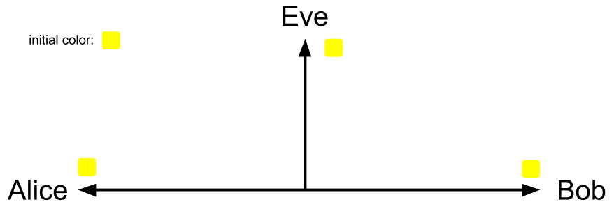
It's better to use the color-mixing to explain the Diffie-Hellman. At first, Alice and Bob agree to use a color Yellow as their initial color. This is not secret, so Eve can also know they will use yellow as their initial color.
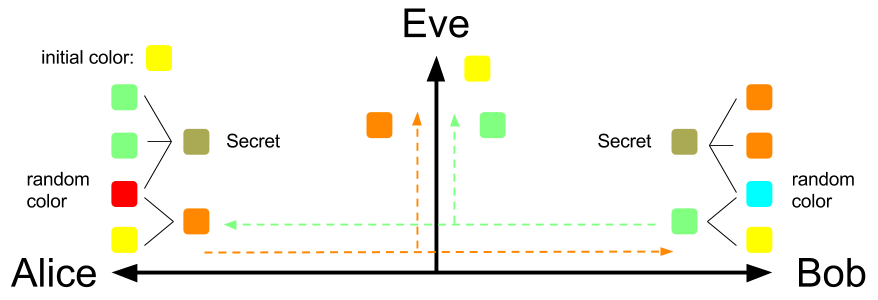
Next, Alice and Bob will randomly choose a secret color that won't tell anyone as their private key. Suppose Alice and Bob choose Red and Cyan respectively, then they will use their own secret color to mix with the initial color Yellow. After mixing the secret color with the initial color, Alice will get color Dark-Orange, and Bob will get color Light-Green as their public key.
Next, Alice and Bob will give each other their mixing color. Eve can eavesdrop the conversation between Alice and Bob, so she can know their mixing color too.
After Alice receives Bob's mixing color: Light-Green, she can make two copies of it and mixing these two with her own secret color: Red to get a final mixing color.
Similarly, Bob can produce a final color by mixing his own secret color with the two copies of received mixing color from Alice.
Surprisingly, Alice and Bob will generate the exactly same final color by the above step! They will both get Olive Green! The final color is the shared secret key between the Alice and Bob.
After they both generate the same shared secret key, they can use it to encrypt or decrypt their messages.
Summary
At first, Alice and Bob choose their own secret color:
- Alice: Red
- Bob: Cyan
Then they mix their secret color with the initial color:
- Alice: Yellow + Red = Dark-Orange
- Bob: Yellow + Cyan = Light-Green
Next, they give each other their mixing color, and then they both use the received mixing color to produce the final color:
- Alice: Red + Light-Green + Light-Green = Olive Green
- Bob: Cyan + Dark-Orange + Dark-Orange = Olive Green
Can we choose other colors?
This game works even Alice and Bob choose other secret colors. Why not try your own to test and see the results?
Try you own
You can play this game on online color mixing tool, like TryColors. If you want to re-produce our example, the used colors are:
| color | code |
|---|---|
| Yellow | #FFFF00 |
| Red | #FF0000 |
| Cyan | #00FFFF |
| Dark-Orange | #FF8000 |
| Light-Green | #80FF80 |
| Olive Green | #AAAA55 |
You can play our example online here. We already put all colors on it.
For those who is curious about the information of the produced colors, you can just enter the color code here to get the color's name.
Can Eve produce the final color?
Actually, Eve can produce the final color in this example if Eve know how Alice and Bob will mix those colors. However, if Alice and Bob finish their private conversation by using the shared secret key to encrypt/decrypt messages before Eve cracks the shared secret key, then the conversation can still be safe.
In real world, the shared key is not easy to crack as our example here. This will be well-explained after introducing the standard Diffie-Hellman below.
Diffie-Hellman in Math

The initial setting between Alice and Bob from the original implementation of the protocol is a multiplicative group \( G \) of integers modulo \( p \) with generator \( g \), where \( p \) is prime, and \( g \) is a primitive root modulo p.
The protocol is pretty simple. First, both Alice and Bob agree to use one set of \( g, p \). Then, just like the color example, Alice and Bob will respectively choose a random integer \( a, b \), where \( a, b \in [1, p-1] \),as their private key.
Next, Alice and Bob will compute their public key \( A \), \( B \):
\begin{aligned} A = g^a \bmod p \\ \\ B = g^b \bmod p \end{aligned}
and send them to each other. That is, Alice will receive \( B \), and Bob will receive \( A \).
After exchanging the public key, Alice and Bob can use the received number to produce a shared secret key.
Let the shared secret key of Alice and Bob are \( Secret_A \) and \( Secret_B \), and they are defined by:
\begin{aligned} Secret_A &= B^a \bmod p \\ &= (g^b \bmod p)^a \bmod p \\ &= g^{ab} \bmod p \\ \\ Secret_B &= A^b \bmod p \\ &= (g^a \bmod p)^b \bmod p \\ &= g^{ab} \bmod p \end{aligned}
(For those who are not familiar with the above operations, please read modular arithmetic in the appendix first.)
Thus,
$$ Secret_A = Secret_B $$
Surprisingly, again, Alice and Bob will generate the exactly same shared secret key. They can use this key to encrypt the sent messages or decrypt the received messages.
Notice that \( a, b, A, B, Secret_A, Secret_B \) are all located in range \( [1, p-1] \) because the operation \( \bmod p \).
Examples
Let \( G = { 1, 2, 3, 4 } \) with prime \( p = 5 \) and generator \( g = 2 \). It's easy to check the group \( G \) by:
\begin{aligned} 2^1 \bmod 5 &= 2 \\ 2^2 \bmod 5 &= 2 \cdot 2 \bmod 5 \\ &= 4 \\ 2^3 \bmod 5 &= 4 \cdot 2 \bmod 5 \\ &= 3 \\ 2^4 \bmod 5 &= 3 \cdot 2 \bmod 5 \\ &= 1 \\ 2^5 \bmod 5 &= 1 \cdot 2 \bmod 5 \\ &= 2 \end{aligned}
The \( g = 2 \) indeed can generate all elements \( { 1, 2, 3, 4 } \) and the generated element will go back to the first at the \( p \) times.
After checking our settings, we start to play the Diffie-Hellman. Suppose Alice picks \( a = 3 \) and Bob picks \( b = 2 \), then
\begin{aligned} A &= g^a \bmod p = 2^3 \bmod 5 = 3 \\ \\ B &= g^b \bmod p = 2^2 \bmod 5 = 4 \end{aligned}
Next, Alice will send \( A \) to Bob, and Bob will send \( B \) to Alice. Then Alice and Bob can compute the shared secret key after receiving the other's public key.
\begin{aligned} Secret_A &= B^a \bmod p = 4^3 \bmod 5 = 4 \\ \\ Secret_B &= A^b \bmod p = 3^2 \bmod 5 = 4 \end{aligned}
It's obvious that \( Secret_A = Secret_B \) is a symmetric key pair, so Alice and Bob can apply some symmetric key cryptography algorithm such as AES, DES, to encrypt and decrypt their messages.
The following table shows what Alice, Bob, and Eve know about the numbers for producing the shared secret key:
| Step | Alice | Eve | Bob |
|---|---|---|---|
| 0 | g = 2, p = 5 | g = 2, p = 5 | g = 2, p = 5 |
| 1 | a = 3 | b = 2 | |
| 2 | A = 3 | A = 3, B = 4 | B = 4 |
| 3 | SecretA = 4 | SecretB = 4 |
To get familiar with the Diffie-Hellman protocol, you can use the example groups in appendix to play it.
One Round-Trip Implementation
The whole Diffie-Hellman can be actually done in one round-trip communication: 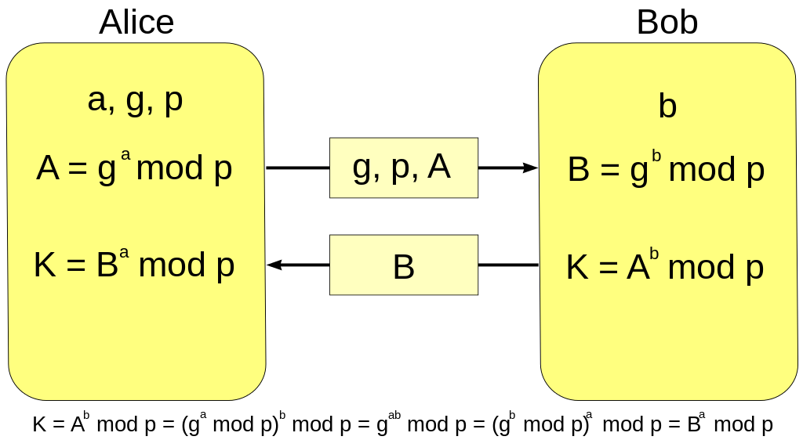
Can Eve compute the shared secret key?
The answer depends on whether \( G \) and \( g \) are chosen properly. In particular, the bigger of the size(or the order) of the group \( G \) is, the better the security between Alice and Bob is.
When the size of \( G \) is small, like the above example, it's easy to crack the secret key from the public key.
For instance, Eve can list all power-value pairs upon she knows \( g \) and \( p \). The power and value is actually the secret key and the public key.
| power(secret key) | value(public key) |
|---|---|
| 1 | 2 |
| 2 | 4 |
| 3 | 3 |
| 4 | 1 |
With the above table, she can easily get the correct secret keys after receiving the public keys. When Eve receives \( A = 3, B = 4 \), she can look up the table to find the \( a = 3, b = 2 \).
However, if the size of group is very large, then it will be very hard to list all the numbers and search the matched secret keys. This is actually the base of our network security today. The function \( f(x) = g^x \bmod p \) is one of the trapdoor functions, or one-way function functions. It's easy to use \( x \) to compute \( f(x) \), yet difficult to find its inverse function \( f^{-1}(f(x)) \) to get \( x \). The inverse function here is called discrete logarithm problem. It is considered to be computationally intractable. Currently there is no efficient algorithm to compute the discrete logarithms in general.
Thus, when \( p \) is a very large number(the size of \( G \) will be very large), then Eve is currently impossible to eavesdrop the messages between Alice and Bob.
(See more of trapdoor function here.)
Generalization to Finite Cyclic Groups
Diffie-Hellman protocol is actually can be generalize to finite cyclic groups, instead of specifying with the multiplicative group of integers modulo \( p \). In practice, Elliptic Curve Diffie–Hellman protocol is usually a better choice. It can achieve same security with less computation.
- Alice and Bob agree to use a finite cyclic group \( G \) of order \( n \) and a generator \( g \). The operation is defined: \( g^2 = g \centerdot g \), where \( \centerdot \) is the operator of the group.
- Alice randomly picks a number \( a \), \( 1 \leq a < n \), and send \( g^a \) to Bob.
- Similarly, Bob picks a random number \( b \), \( 1 \leq b < n \), and send \( g^b \) to Alice.
- Alice computes \( (g^b)^a = g^{ab} \)
- Bob computes \( (g^a)^b = g^{ab} \)
The \( f(x) = g^x \) must be a one-way function and there should be no efficient algorithm to compute \( g^{ab} \) given \( g^a \) and \( g^b \), otherwise, the communication is insecure.
General Model

From the above two examples of Diffie-Hellman, we can find its general model. The general model is shown on above figure.
To make sure the communication is secure, function \( f \) must be one-way function and there must be no efficient method to compute the \( Secret_A, Secret_B \) given \( A, B \).
The standard DH implementation
We demostrate the original implementation of Diffie-Hellman in the general model below.
The Hypothesis and the Function Operation
Hypothesis \( h \) is the group geneator \( g \), and the function \( f, F \) are defined:
$$ f(x,y) = F(x,y) = x^y \mod p $$
Alice
Alice first randomly choose a secret number \( a \), \( a \in [1, p) \), where \( p \) is the order of the group. Next, Alice will compute a public key \( A \) and send it to Bob. Then Alice will receive Bob's public key \( B \) and then use it with secret number \( a \) to derive the shared key \( Secret_A \). (For those who are not familiar with the following operations, please read modular arithmetic in the appendix first.)
\begin{aligned} A =& f(h,a) \\ =& f(g,a) = g^a \mod p \\ \\ Secret_A =& F(B,a) = B^a \mod p \\ =& (f(h,b))^a \mod p \\ =& (f(g,b))^a \mod p \\ =& (g^b \mod p)^a \mod p \\ =& g^{ab} \mod p \end{aligned}
Bob
Similarly, Bob first randomly choose a secret number \( b \), \( b \in [1, p) \), where \( p \) is the order of the group. Next, Bob will compute a public key \( B \) and send it to Alice. Then Bob will receive Alice's public key \( A \) and then use it with secret number \( b \) to derive the shared key \( Secret_B \).
\begin{aligned} B =& f(h,b) \\ =& f(g,b) = g^b \mod p \\ \\ Secret_B =& F(A,b) = A^b \mod p \\ =& (f(h,a))^b \mod p \\ =& (f(g,a))^b \mod p \\ =& (g^a \mod p)^b \mod p \\ =& g^{ab} \mod p \end{aligned}
For Color Calculation

Color Code
All of the color are mixed by red, green and blue lights. They all can be coded in a RGB set \( (r, g, b) \), where \( r \) is for red light, \( g \) is for green light, \( b \) is for blue light.
Operations
The operations of color code are defined:
- \( k(r, g, b) = (kr, kg, kb) \), where \( k \) is a constant.
- \( (p, q, r) \square (l, m, n) = (p \square l, q \square m, r \square n) \), where \( \square \) can be any operator like \( +, -, \cdot, / \).
Color Mixing
Suppose we have n colors: \( C_1, C_2, ...,C_n \), where \( C_1 = (R_1, G_1, B_1), C_2 = (R_2, G_2, B_2), ..., C_n = (R_n, G_n, B_n) \). The mixing color for these n one is \( C_{mixing} = (C_1 + C_2 + ... + C_n)/n = (\frac{R_1 + R_2 + ... + R_n}{n}, \frac{G_1 + G_2 + ... + G_n}{n}, \frac{B_1 + B_2 + ... + B_n}{n}) \)
The Hypothesis and the Function Operation
Hypothesis \( h \) is the group geneator \( g \), and the function \( f, F \) are defined:
\begin{aligned} f(X,Y) =& \frac{X}{2} + \frac{Y}{2} \\ =& \frac{(R_x, G_x, B_x)}{2} + \frac{(R_y, G_y, B_y)}{2} \\ =& (\frac{R_x + R_y}{2}, \frac{G_x + G_y}{2}, \frac{B_x + B_y}{2}) \\ \\ F(X,Y) =& \frac{2X}{3} + \frac{Y}{3} \\ =& \frac{(2R_x, 2G_x, 2B_x)}{3} + \frac{(R_y, G_y, B_y)}{3} \\ =& (\frac{2R_x + R_y}{3}, \frac{2G_x + G_y}{3}, \frac{2B_x + B_y}{3}) \end{aligned}
$$ \text{, where } X = (R_x, G_x, B_x), Y=(R_y, G_y, B_y) \text{ are both RGB-color sets.} $$
Alice
Randomly choose a secret color \( a = (R_a, G_a, B_a) \).
The mixing color \( A \), \( A = (R_A, G_A, B_A) = f(h, a) \), will be sent to Bob, and Alice will receive a mixing color \( B \) from Bob. Then \( Secret_A \) can be derived by \( B \) and \( a \).
\begin{aligned} A =& (R_A, G_A, B_A) \\ =& f(h, a) \\ =& (\frac{R_i + R_a}{2}, \frac{G_i + G_a}{2}, \frac{B_i + B_a}{2}) \\ Secret_A =& F(B, a) \\ =& (\frac{2R_B + R_a}{3}, \frac{2G_B + G_a}{3}, \frac{2B_B + B_a}{3}) \\ =& (\frac{2(\frac{R_i + R_b}{2}) + R_a}{3}, \frac{2(\frac{G_i + G_b}{2}) + G_a}{3}, \frac{2(\frac{B_i + B_b}{2}) + B_a}{3}) \\ =& (\frac{R_i + R_a + R_b}{3}, \frac{G_i + G_a + G_b}{3}, \frac{B_i + B_a + B_b}{3}) \end{aligned}
Bob
Randomly choose a secret color \( b = (R_b, G_b, B_b) \)
The mixing color \( B \), \( B = (R_B, G_B, B_B) = f(h, b) \), will be sent to Alice, and Bob will receive a mixing color \( A \) from Alice. Then \( Secret_B \) can be derived by \( A \) and \( b \).
\begin{aligned} B =& (R_B, G_B, B_B) \\ =& f(h, b) \\ =& (\frac{R_i + R_b}{2}, \frac{G_i + G_b}{2}, \frac{B_i + B_b}{2}) \\ Secret_B =& F(A, b) \\ =& (\frac{2R_A + R_b}{3}, \frac{2G_A + G_b}{3}, \frac{2B_A + B_b}{3}) \\ =& (\frac{2(\frac{R_i + R_a}{2}) + R_b}{3}, \frac{2(\frac{G_i + G_a}{2}) + G_b}{3}, \frac{2(\frac{B_i + B_a}{2}) + B_b}{3}) \\ =& (\frac{R_i + R_a + R_b}{3}, \frac{G_i + G_a + G_b}{3}, \frac{B_i + B_a + B_b}{3}) \end{aligned}
Real World Usage
The symmetric secret key \( Secret_A, Secret_B \) is almost never used as the cryptographic key directly since it may have some weak bits. One possible solution is to use its hash value instead to overcome this weakness.
Weak of DH: No Authentication
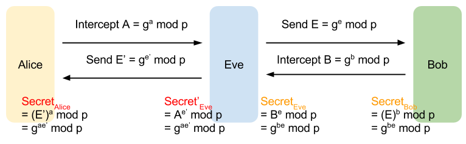
Diffie-Hellman protocol has an obvious weak: It has no authentication mechanism. Neither side of the exchange is authenticated. Alice and Bob indeed can generate a shared secret key, but Alice can't distinguish whether or not Bob is the real one, and Bob can't know whether or not the one he is talking to is Alice.
This weak give Eve a chance to cheat them. First, Eve can intercepts the public key \( A \) from Alice for Bob and substitutes it with Eve's own public key \( E \) to Bob. After Bob send back his public key \( B \), Eve will finally get a shared secret key paired with Bob.
Next, Eve will act as Bob and send her another public key \( E' \) to Alice. Then Eve can get a shared secret key paired with Alice.
That is, Eve can generate shared secret keys with them both
- SecretEve, that is same as the one Bob has: SecretBob
- Secret'Eve, that is same as the one Alice has: SecretAlice
Thus, Eve can build secure channels with them each other and act as a bridge to pass the messages between Alice and Bob. Alice still can talk to Bob through Eve, and vice versa. However, Eve can know anything that Bob talks to Alice, and all the Alice's messages to Bob by decrypting the received messages from Alice or Bob. Before re-encrypting with the appropriate key and transmitting them to the other party, Eve even can tamper the messages.
This is really dangerous. Using digital signatures is a possible solution to avoid this active attack, but it requires a public key infrastructure(PKI) to do the authentication.
One-way Function
The trapdoor function, or the one-way function, is the base of the network security today. Please read trapdoor function in appendix to get more detail.
Operation with More than Two Parties
The Diffie–Hellman protocol can work on more than two parties. Please read Diffie–Hellman in multiple parties in appendix to get more detail.
References
- General introduction of Diffie-Hellman Key Exchange
- Wiki: Diffie–Hellman key exchange
- TryColors: Online Color Mixing tool
- htmlcsscolor: Get Color Name and Info
https://en.wikipedia.org/wiki/Diffie%E2%80%93Hellman_key_exchange#Operation_with_more_than_two_parties
Diffie-Hellman Assumptions
- Computational Diffie-Hellman assumption(CDH): an attacker is unable to compute the session key
- Decisional DiffieHellman assumption(DDH): an attacker is unable to distinguish the session key from random
Zero-Knowledge Proof

Properties
- completeness: if the proof is true, honest prover convince verifier with overwhelming probability.
- soundness: if the proof is false, no the honest verifier will be convinced by the cheating prover, except with some negligible probability.
- zero knowledge: no secret leaked from proof.
Abstract example


References
Schnorr Signature
Schnorr Signature is one of Zero-Knowledge Proof
Send messages with a Schnorr signature
Proof of the exponent for X = gx

References
References
http://andrea.corbellini.name/2015/05/17/elliptic-curve-cryptography-a-gentle-introduction/
PAKE or J-PAKE can use Elliptic Curve Cryptography(ECC) to replace the multiplicative cyclic group with additive cyclic group defined over some elliptic curve.